Capítulo 4Distribuições Amostrais e Limites
Esboço do capítulo
- Seção 1 Distribuições Amostrais
- Seção 2 Convergência em Probabilidade
- Seção 3 Convergência com Probabilidade 1
- Seção 4 Convergência em Distribuição
- Seção 5 Aproximações de Monte Carlo
- Seção 6 Teoria da Distribuição Normal
- Seção 7 Demonstrações Adicionais (Avançado)
Em muitas aplicações da teoria da probabilidade, deparamo-nos com o seguinte problema. Suponha que \(X_1, X_2, \ldots, X_n\) seja uma sequência independente e identicamente distribuída (i.i.d.), isto é, que \(X_1, X_2, \ldots, X_n\) seja uma amostra de alguma distribuição, e que estejamos interessados na distribuição de uma nova variável aleatória1 \(Y = h(X_1, X_2, \ldots, X_n)\) para alguma função \(h\). Em particular, podemos querer calcular a função de distribuição de \(Y\), ou talvez sua média e sua variância2. A distribuição de \(Y\) às vezes é chamada de sua distribuição amostral3, já que \(Y\) se baseia numa amostra de alguma distribuição subjacente.
Veremos que alguns dos métodos desenvolvidos nos capítulos anteriores são úteis para resolver problemas desse tipo, sobretudo quando é possível calcular uma solução exata, por exemplo, obter uma expressão exata para a função de probabilidade4 ou para a função densidade5 de \(Y\). A Seção 4.6 contém vários resultados exatos sobre a distribuição de diversas funções de variáveis aleatórias normais. Eles têm aplicações importantes em estatística.
Muitas vezes, porém, é impossível obter resultados exatos, porque o problema é simplesmente complexo demais. Nesses casos, precisamos desenvolver uma aproximação para a distribuição de \(Y\).
Em muitos problemas importantes, define-se uma versão de \(Y\) para cada tamanho de amostra \(n\) (por exemplo, uma média amostral ou uma variância amostral), de modo que podemos considerar uma sequência de variáveis aleatórias \(Y_1, Y_2, \ldots\) etc. Isso nos leva a considerar a distribuição limite6 de uma sequência desse tipo para que, quando \(n\) for grande, possamos aproximar a distribuição de \(Y_n\) pelo limite, que muitas vezes é bem mais simples. Essa abordagem leva a um resultado famoso, conhecido como teorema central do limite7, discutido na Seção 4.4.
Às vezes não conseguimos desenvolver nem mesmo aproximações úteis para \(n\) grande, seja pela dificuldade do problema, seja porque \(n\) é simplesmente pequeno demais numa aplicação específica. Felizmente, porém, podemos então usar a abordagem de Monte Carlo, na qual o poder do computador entra em cena. Isso é discutido na Seção 4.5.
No Capítulo 5, veremos que, em aplicações estatísticas, em geral não sabemos muito sobre a distribuição subjacente dos \(X_i\) dos quais estamos amostrando. Coletamos então uma amostra e um valor, como \(Y\), que servirá de estimativa8 de uma característica da distribuição subjacente; por exemplo, a média amostral \(\bar{X}\) servirá de estimativa da média da distribuição dos \(X_i\). Queremos então saber o que acontece com essas estimativas à medida que \(n\) cresce. Se tivermos escolhido bem as estimativas, elas convergirão para as quantidades que estamos estimando à medida que \(n\) aumenta. Uma estimativa assim é chamada de consistente. Nas Seções 4.2 e 4.3, discutiremos os teoremas de consistência mais importantes, a saber, as leis fraca e forte dos grandes números.
4.1 Distribuições Amostrais
Consideremos um exemplo bem simples.
Suponha que obtemos uma amostra \(X_1, X_2\) de tamanho \(n = 2\) da distribuição discreta com função de probabilidade dada por \[ p_X(x) = \begin{cases} 1/2 & x = 1\\ 1/4 & x = 2\\ 1/4 & x = 3\\ 0 & \text{caso contrário.} \end{cases} \] Tomemos \(Y_2 = (X_1 X_2)^{1/2}\). Essa é a média geométrica9 dos valores da amostra (a média geométrica de \(n\) números positivos \(x_1, \ldots, x_n\) é definida como \((x_1 \cdots x_n)^{1/n}\)).
Para determinar a distribuição de \(Y_2\), primeiro listamos os valores possíveis de \(Y_2\), as amostras que dão origem a esses valores e suas probabilidades de ocorrência. Os valores dessas probabilidades especificam a distribuição amostral de \(Y\). Temos a tabela a seguir.10
| \(y\) | Amostra | \(p_{Y_2}(y)\) |
|---|---|---|
| \(1\) | \(\{(1, 1)\}\) | \((1/2)(1/2) = 1/4\) |
| \(\sqrt{2}\) | \(\{(1, 2), (2, 1)\}\) | \((1/2)(1/4) + (1/4)(1/2) = 1/4\) |
| \(\sqrt{3}\) | \(\{(1, 3), (1, 3)\}\) | \((1/2)(1/4) + (1/4)(1/2) = 1/4\) |
| \(2\) | \(\{(2, 2)\}\) | \((1/4)(1/4) = 1/16\) |
| \(\sqrt{6}\) | \(\{(2, 3), (3, 2)\}\) | \((1/4)(1/4) + (1/4)(1/4) = 1/8\) |
| \(3\) | \(\{(3, 3)\}\) | \((1/4)(1/4) = 1/16\) |
Suponha agora que temos, em vez disso, uma amostra \(X_1, \ldots, X_{20}\) de tamanho \(n = 20\) e queremos encontrar a distribuição de \(Y_{20} = (X_1 \cdots X_{20})^{1/20}\). É claro que podemos proceder como acima, mas desta vez as contas são muito mais complicadas, já que agora há \(3^{20} = 3.486.784.401\) amostras possíveis, contra as \(3^2 = 9\) amostras usadas para montar a tabela anterior. Calcular \(p_{Y_{20}}\) diretamente, como fizemos para \(p_{Y_2}\), seria custoso, mesmo para um computador! Então, o que podemos fazer aqui?
Uma possibilidade é olhar para a distribuição de \(Y_n = (X_1 \cdots X_n)^{1/n}\) quando \(n\) é grande e ver se conseguimos aproximá-la de alguma forma. Os resultados da Seção 4.4.1 mostram que \[ \ln Y_n = \frac{1}{n} \sum_{i=1}^{n} \ln X_i \] tem distribuição aproximadamente normal quando \(n\) é grande. De fato, a distribuição normal que aproxima quando \(n = 20\) acaba sendo uma distribuição \(N(0{,}447940; 0{,}105167)\).11 Traçamos o gráfico dessa densidade na Figura 4.1.1.
Outra abordagem é usar os métodos da Seção 2.10 para gerar \(N\) amostras de tamanho \(n = 20\) a partir de \(p_X\), calcular \(\ln Y_{20}\) para cada uma (\(\ln\) é uma transformação injetora12, e transformamos para evitar os valores potencialmente grandes assumidos por \(Y_{20}\)) e então usar esses \(N\) valores para aproximar a distribuição de \(\ln Y_{20}\). Por exemplo, na Figura 4.1.2 apresentamos o gráfico de um histograma de densidade (veja a Seção 5.4.3 para mais discussão sobre histogramas) de \(N = 10^4\) valores de \(\ln Y_{20}\) calculados a partir de \(N = 10^4\) amostras de tamanho \(n = 20\) geradas (com o computador) a partir de \(p_X\). A área de cada retângulo corresponde à proporção de valores de \(\ln Y_{20}\) que caíram no intervalo dado pela base do retângulo. Como veremos nas Seções 4.2, 4.3 e 4.4, essas áreas aproximam as probabilidades reais de \(\ln Y_{20}\) cair nesses intervalos. Essas aproximações melhoram à medida que aumentamos \(N\).
Repare na semelhança entre as formas das Figuras 4.1.1 e 4.1.2. A Figura 4.1.2, porém, não é simétrica em relação ao seu centro, pois é um pouco assimétrica. Isso é um indício de que a aproximação normal não é inteiramente adequada quando \(n = 20\).
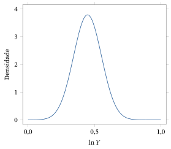
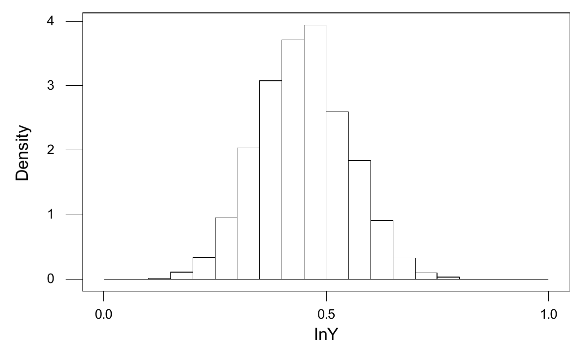
Às vezes temos sorte e conseguimos obter a distribuição amostral de \[ Y = h(X_1, X_2, \ldots, X_n) \] exatamente, numa forma útil para calcular probabilidades e esperanças de \(Y\). Em geral, porém, quando queremos calcular \(P(Y \in B) = P_Y(B)\), temos de determinar o conjunto de amostras \((X_1, X_2, \ldots, X_n)\) tais que \(Y \in B\), dado por \[ h^{-1}B = \{(x_1, x_2, \ldots, x_n) : h(x_1, x_2, \ldots, x_n) \in B\}, \] e então calcular \(P((X_1, X_2, \ldots, X_n) \in h^{-1}B)\). Em geral, esse é um problema intratável, e aproximações ou métodos de simulação (Monte Carlo) serão essenciais. Técnicas para obter essas aproximações serão discutidas nas seções seguintes deste capítulo. Em particular, desenvolveremos uma aproximação importante para a distribuição amostral da média amostral \[ \bar{X} = h(X_1, X_2, \ldots, X_n) = \frac{1}{n} \sum_{i=1}^{n} X_i. \]
Resumo da Seção 4.1
- Uma distribuição amostral é a distribuição de uma variável aleatória correspondente a uma função de alguma sequência i.i.d.
- As distribuições amostrais às vezes podem ser obtidas por cálculo direto ou por aproximações, como o teorema central do limite.
Exercícios
4.1.1 Suponha que \(X_1, X_2, X_3\) sejam i.i.d. com função de probabilidade \(p_X\) do Exemplo 4.1.1. Determine a distribuição exata de \(Y_3 = (X_1 X_2 X_3)^{1/3}\).
4.1.2 Suponha que um dado honesto de seis faces seja lançado \(n = 2\) vezes, de forma independente. Calcule a distribuição exata da média amostral.
4.1.3 Suponha que uma urna contenha uma proporção \(p\) de fichas marcadas com 0 e uma proporção \(1 - p\) de fichas marcadas com 1. Para uma amostra de \(n = 2\), retirada com reposição, determine a distribuição da média amostral.
4.1.4 Suponha que uma urna contenha \(N\) fichas marcadas com 0 e \(M\) fichas marcadas com 1. Para uma amostra de \(n = 2\), retirada sem reposição, determine a distribuição da média amostral.
4.1.5 Suponha que um dado simétrico seja lançado \(n = 20\) vezes, de forma independente. Obtenha a distribuição amostral exata do máximo dessa amostra.
4.1.6 Suponha que três dados honestos sejam lançados, e seja \(Y\) o número de faces 6 obtidas. Calcule a distribuição exata de \(Y\).
4.1.7 Suponha que dois dados honestos sejam lançados, e seja \(W\) o produto dos dois números obtidos. Calcule a distribuição exata de \(W\).
4.1.8 Suponha que dois dados honestos sejam lançados, e seja \(Z\) a diferença entre os dois números obtidos (isto é, o primeiro número menos o segundo). Calcule a distribuição exata de \(Z\).
4.1.9 Suponha que quatro moedas honestas sejam lançadas, e seja \(Y\) o número de pares de moedas que caem do mesmo jeito (isto é, o número de pares em que as duas dão cara ou as duas dão coroa). Calcule a distribuição exata de \(Y\).
Exercícios computacionais
4.1.10 Gere uma amostra de \(N = 10^3\) valores de \(Y_{50}\) do Exemplo 4.1.1. Calcule a média e o desvio padrão13 dessa amostra.
4.1.11 Suponha que \(X_1, X_2, \ldots, X_{10}\) seja uma sequência i.i.d. de uma distribuição \(N(0, 1)\). Gere uma amostra de \(N = 10^3\) valores da distribuição de \(\max(X_1, X_2, \ldots, X_{10})\). Calcule a média e o desvio padrão dessa amostra.
Problemas
4.1.12 Suponha que \(X_1, X_2, \ldots, X_n\) seja uma amostra da distribuição Poisson\((\lambda)\). Determine a distribuição amostral exata de \(Y = X_1 + X_2 + \cdots + X_n\). (Sugestão: determine a função geradora de momentos14 de \(Y\) e use o teorema da unicidade15.)
4.1.13 Suponha que \(X_1, X_2\) seja uma amostra da distribuição Uniforme16\([0, 1]\). Determine a distribuição amostral exata de \(Y = X_1 + X_2\). (Sugestão: determine a densidade de \(Y\).)
4.1.14 Suponha que \(X_1, X_2\) seja uma amostra da distribuição Uniforme\([0, 1]\). Determine a distribuição amostral exata de \(Y = (X_1 X_2)^{1/2}\). (Sugestão: determine a densidade de \(\ln Y\) e depois transforme.)
4.2 Convergência em Probabilidade
Noções de convergência são fundamentais em boa parte da matemática. Por exemplo, se \(a_n = 1 - 1/n\), então \(a_1 = 0\), \(a_2 = 1/2\), \(a_3 = 2/3\), \(a_4 = 3/4\) etc. Vemos que os valores de \(a_n\) estão ficando “cada vez mais próximos” de 1 e, de fato, sabemos do cálculo que \(\lim_{n \to \infty} a_n = 1\) neste caso.
Para variáveis aleatórias, as noções de convergência são mais complicadas. Se os próprios valores são aleatórios, como podem “convergir” para alguma coisa? Por outro lado, podemos considerar várias probabilidades associadas às variáveis aleatórias e ver se elas convergem em algum sentido.
A noção mais simples de convergência de variáveis aleatórias é a convergência em probabilidade17, definida a seguir. (Outras noções de convergência serão desenvolvidas nas seções seguintes.)
Sejam \(X_1, X_2, \ldots\) uma sequência infinita de variáveis aleatórias e \(Y\) outra variável aleatória. A sequência \(\{X_n\}\) converge em probabilidade para \(Y\) se, para todo \(\epsilon > 0\), \(\lim_{n \to \infty} P(|X_n - Y| \ge \epsilon)\) \({}= 0\), e escrevemos \(X_n \xrightarrow{P} Y\).
Na Figura 4.2.1, representamos as diferenças \(X_n - Y\), para valores selecionados de \(n\), em 10 sequências geradas \(\{X_n - Y\}\), numa situação típica em que as variáveis aleatórias \(X_n\) convergem em probabilidade para uma variável aleatória \(Y\). Também traçamos as retas horizontais em \(\pm\epsilon\) para \(\epsilon = 0{,}25\). Com isso, vemos a concentração crescente da distribuição de \(X_n - Y\) em torno de 0 à medida que \(n\) cresce, como exige a Definição 4.2.1. De fato, os 10 valores observados de \(X_{100} - Y\) satisfazem todos a desigualdade \(|X_{100} - Y| < 0{,}25\).
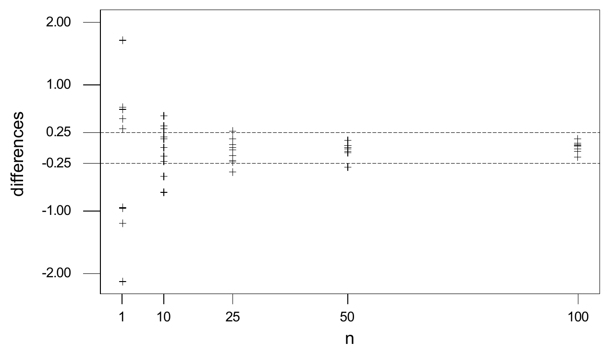
Vejamos algumas aplicações dessa definição.
Seja \(Y\) uma variável aleatória qualquer e sejam \(X_1 = X_2 = X_3 = \cdots = Y\). (Isto é, as variáveis aleatórias são todas idênticas entre si.) Nesse caso, \(|X_n - Y| = 0\) e, portanto, evidentemente, \[ \lim_{n \to \infty} P(|X_n - Y| \ge \epsilon) = 0 \] para todo \(\epsilon > 0\). Logo, \(X_n \xrightarrow{P} Y\).
Suponha que \(P(X_n = 1 - 1/n) = 1\) e \(P(Y = 1) = 1\). Então \(P(|X_n - Y| \ge \epsilon) = 0\) sempre que \(n > 1/\epsilon\). Logo, \(P(|X_n - Y| \ge \epsilon) \to 0\) quando \(n \to \infty\), para todo \(\epsilon > 0\). Portanto, a sequência \(\{X_n\}\) converge em probabilidade para \(Y\). (Aqui, as distribuições de \(X_n\) e de \(Y\) são todas degeneradas.)
Seja \(U \sim \text{Uniforme}[0, 1]\). Defina \(X_n\) por \[ X_n = \begin{cases} 3 & U \le \frac{2}{3} - \frac{1}{n}\\ 8 & \text{caso contrário,} \end{cases} \] e defina \(Y\) por \[ Y = \begin{cases} 3 & U \le \frac{2}{3}\\ 8 & \text{caso contrário.} \end{cases} \] Então \[ P(|X_n - Y| \ge \epsilon) \le P(X_n \ne Y) = P\left(\frac{2}{3} - \frac{1}{n} < U \le \frac{2}{3}\right) = \frac{1}{n}. \] Logo, \(P(|X_n - Y| \ge \epsilon) \to 0\) quando \(n \to \infty\), para todo \(\epsilon > 0\), e a sequência \(\{X_n\}\) converge em probabilidade para \(Y\). (Desta vez, as distribuições de \(X_n\) e de \(Y\) não são degeneradas.)
Um caso comum é aquele em que as distribuições dos \(X_n\) não são degeneradas, mas \(Y\) é apenas uma constante, como no exemplo a seguir.
Suponha que \(Z_n \sim \text{Exponencial}(n)\) e seja \(Y = 0\). Então \[ P(|Z_n - Y| \ge \epsilon) = P(Z_n \ge \epsilon) = \int_{\epsilon}^{\infty} n e^{-nx}\, dx = e^{-n\epsilon}. \] Logo, novamente, \(P(|Z_n - Y| \ge \epsilon) \to 0\) quando \(n \to \infty\), para todo \(\epsilon > 0\), de modo que a sequência \(\{Z_n\}\) converge em probabilidade para \(Y\).
4.2.1 A Lei Fraca dos Grandes Números
Uma das aplicações mais importantes da convergência em probabilidade é a lei fraca dos grandes números18. Suponha que \(X_1, X_2, \ldots\) seja uma sequência de variáveis aleatórias independentes, todas com a mesma média \(\mu\). Para \(n\) grande, o que podemos dizer sobre a média delas, \[ M_n = \frac{1}{n}(X_1 + \cdots + X_n)? \] Chamamos \(M_n\) de média da amostra, ou média amostral, de \(X_1, \ldots, X_n\). Quando o tamanho da amostra19 \(n\) está fixo, usaremos muitas vezes \(\bar{X}\) como notação da média amostral em vez de \(M_n\).
Por exemplo, se lançamos uma sequência de moedas honestas e tomamos \(X_i = 1\) ou \(X_i = 0\) conforme a \(i\)-ésima moeda dê cara ou coroa, então \(M_n\) representa a fração das \(n\) primeiras moedas que deram cara. Seria de esperar que, para \(n\) grande, essa fração fique próxima de \(1/2\), isto é, do valor esperado20 dos \(X_i\).
A lei fraca dos grandes números dá um sentido preciso em que as médias \(M_n\) tendem a se aproximar de \(E(X_i)\), para \(n\) grande.
Seja \(X_1, X_2, \ldots\) uma sequência de variáveis aleatórias independentes, todas com a mesma média \(\mu\) e com variância menor ou igual a \(\upsilon < \infty\). Então, para todo \(\epsilon > 0\), \(\lim_{n \to \infty} P(|M_n - \mu| \ge \epsilon)\) \({}= 0\). Isto é, as médias convergem em probabilidade para a média comum \(\mu\), ou \(M_n \xrightarrow{P} \mu\).
Pela linearidade21 dos valores esperados, vemos que \(E(M_n) = \mu\). Além disso, pela independência, temos \begin{align*} \Var(M_n) &= \frac{1}{n^2}\bigl(\Var(X_1) + \Var(X_2) + \cdots + \Var(X_n)\bigr)\\ &\le \frac{1}{n^2}(\upsilon + \upsilon + \cdots + \upsilon) = \frac{1}{n^2}(n\upsilon) = \upsilon/n. \end{align*} Logo, pela desigualdade de Chebychev22 (Teorema 3.6.2), temos \[ P(|M_n - \mu| \ge \epsilon) \le \Var(M_n)/\epsilon^2 \le \upsilon/\epsilon^2 n. \] Isso converge para 0 quando \(n \to \infty\), o que prova o teorema.
É fato que, no Teorema 4.2.1, se exigirmos que as variáveis \(X_i\) sejam i.i.d. em vez de apenas independentes, nem sequer precisamos que os \(X_i\) tenham variância finita. Mas não discutiremos esse resultado aqui. Vejamos algumas aplicações da lei fraca dos grandes números.
Considere o lançamento de uma sequência de moedas honestas idênticas. Seja \(M_n\) a fração das \(n\) primeiras moedas que dão cara. Então \(M_n = (X_1 + \cdots + X_n)/n\), em que \(X_i = 1\) se a \(i\)-ésima moeda dá cara e, caso contrário, \(X_i = 0\). Logo, pela lei fraca dos grandes números, temos \begin{align*} \lim_{n \to \infty} P(M_n < 0{,}49) &= \lim_{n \to \infty} P(M_n - 0{,}5 < -0{,}01)\\ &\le \lim_{n \to \infty} P(M_n - 0{,}5 < -0{,}01 \text{ ou } M_n - 0{,}5 > 0{,}01)\\ &= \lim_{n \to \infty} P(|M_n - 0{,}5| > 0{,}01) = 0 \end{align*} e, analogamente, \(\lim_{n \to \infty} P(M_n > 0{,}51) = 0\). Isso ilustra que, para \(n\) grande, é muito provável que \(M_n\) esteja muito próximo de 0,5.
Considere o lançamento de uma sequência de moedas idênticas, cada uma com probabilidade \(p\) de dar cara. Seja \(M_n\), novamente, a fração das \(n\) primeiras moedas que dão cara. Então, pela lei fraca dos grandes números, para todo \(\epsilon > 0\), \(\lim_{n \to \infty} P(p - \epsilon < M_n < p + \epsilon)\) \({}= 1\). Vemos, assim, que, para \(n\) grande, é muito provável que \(M_n\) esteja muito próximo de \(p\). (O exemplo anterior corresponde ao caso particular \(p = 1/2\).)
Sejam \(X_1, X_2, \ldots\) i.i.d. com distribuição \(N(3, 5)\). Então \(E(M_n) = 3\) e, pela lei fraca dos grandes números, \(P(3 - \epsilon < M_n < 3 + \epsilon) \to 1\) quando \(n \to \infty\). Logo, para \(n\) grande, a média \(M_n\) está muito próxima de 3.
Sejam \(W_1, W_2, \ldots\) i.i.d. com distribuição \(\text{Exponencial}(6)\). Então \(E(M_n) = 1/6\) e, pela lei fraca dos grandes números, \(P(1/6 - \epsilon < M_n < 1/6 + \epsilon) \to 1\) quando \(n \to \infty\). Logo, para \(n\) grande, a média \(M_n\) está muito próxima de \(1/6\).
Resumo da Seção 4.2
- Uma sequência \(\{X_n\}\) de variáveis aleatórias converge em probabilidade para \(Y\) se \[ \lim_{n \to \infty} P(|X_n - Y| \ge \epsilon) = 0. \]
- A lei fraca dos grandes números diz que, se \(\{X_n\}\) é i.i.d. (ou é independente, com média constante e variância limitada), então as médias \(M_n = (X_1 + \cdots + X_n)/n\) convergem em probabilidade para \(E(X_i)\).
Exercícios
4.2.1 Sejam \(U \sim \text{Uniforme}[5, 10]\), \(Z = I_{U \in [5, 7)}\) e \(Z_n = I_{U \in [5,\, 7 + 1/n^2)}\). Prove que \(Z_n \to Z\) em probabilidade.
4.2.2 Sejam \(Y \sim \text{Uniforme}[0, 1]\) e \(X_n = Y^n\). Prove que \(X_n \to 0\) em probabilidade.
4.2.3 Sejam \(W_1, W_2, \ldots\) i.i.d. com distribuição \(\text{Exponencial}(3)\). Prove que, para algum \(n\), temos \(P(W_1 + W_2 + \cdots + W_n < n/2) > 0{,}999\).
4.2.4 Sejam \(Y_1, Y_2, \ldots\) i.i.d. com distribuição \(N(2, 5)\). Prove que, para algum \(n\), temos \(P(Y_1 + Y_2 + \cdots + Y_n > n) > 0{,}999\).
4.2.5 Sejam \(X_1, X_2, \ldots\) i.i.d. com distribuição \(\text{Poisson}(8)\). Prove que, para algum \(n\), temos \(P(X_1 + X_2 + \cdots + X_n > 9n) < 0{,}001\).
4.2.6 Suponha que \(X \sim \text{Uniforme}[0, 1]\) e seja \(Y_n = \frac{n-1}{n} X\). Prove que \(Y_n \xrightarrow{P} X\).
4.2.7 Sejam \(H_n\) o número de caras no lançamento de \(n\) moedas honestas, \(X_n = e^{-H_n}\) e \(Y = 0\). Prove que \(X_n \xrightarrow{P} Y\).
4.2.8 Sejam \(Z_n \sim \text{Uniforme}[0, n]\), \(W_n = 5Z_n/(Z_n + 1)\) e \(W = 5\). Prove que \(W_n \xrightarrow{P} W\).
4.2.9 Considere o lançamento de \(n\) moedas honestas. Sejam \(H_n\) o número total de caras e \(F_n\) o número de caras nas moedas de 1 a \(n - 1\) (isto é, omitindo a \(n\)-ésima moeda). Sejam \(X_n = H_n/(H_n + 1)\), \(Y_n = F_n/(H_n + 1)\) e \(Z = 0\). Prove que \(X_n - Y_n \xrightarrow{P} Z\).
4.2.10 Seja \(Z_n\) a soma dos quadrados dos números obtidos ao lançarmos \(n\) dados honestos. Encontre (com demonstração) um número \(m\) tal que \(\frac{1}{n} Z_n \xrightarrow{P} m\). (Sugestão: use a lei fraca dos grandes números.)
4.2.11 Considere o lançamento de \(n\) moedas honestas de 5 centavos e \(n\) moedas honestas de 10 centavos. Seja \(X_n\) igual a 4 vezes o número de moedas de 5 centavos que dão cara mais 5 vezes o número de moedas de 10 centavos que dão cara. Encontre (com demonstração) um número \(r\) tal que \(\frac{1}{n} X_n \xrightarrow{P} r\).
Exercícios computacionais
4.2.12 Gere \(X_1, \ldots, X_n\) i.i.d. com distribuição \(\text{Exponencial}(5)\) e calcule \(M_n\) para \(n = 20\). Repita isso \(N\) vezes, com \(N\) grande (se possível, tome \(N = 10^5\); caso contrário, tão grande quanto for viável), e calcule a proporção dos valores de \(M_n\) que ficam entre 0,19 e 0,21. Repita com \(n = 50\). Que propriedade da convergência em probabilidade seus resultados ilustram?
4.2.13 Gere \(X_1, \ldots, X_n\) i.i.d. com distribuição \(\text{Poisson}(7)\) e calcule \(M_n\) para \(n = 20\). Repita isso \(N\) vezes, com \(N\) grande (se possível, tome \(N = 10^5\); caso contrário, tão grande quanto for viável), e calcule a proporção dos valores de \(M_n\) que ficam entre 6,99 e 7,01. Repita com \(n = 100\). Que propriedade da convergência em probabilidade seus resultados ilustram?
Problemas
4.2.14 Dê um exemplo de variáveis aleatórias \(X_1, X_2, \ldots\) tais que \(\{X_n\}\) converge para 0 em probabilidade, mas \(E(X_n) = 1\) para todo \(n\). (Sugestão: suponha que \(P(X_n = n) = 1/n\) e \(P(X_n = 0) = 1 - 1/n\).)
4.2.15 Prove que \(X_n \xrightarrow{P} 0\) se e somente se \(|X_n| \xrightarrow{P} 0\).
4.2.16 Prove ou refute: \(X_n \xrightarrow{P} 5\) se e somente se \(|X_n| \xrightarrow{P} 5\).
4.2.17 Suponha que \(X_n \xrightarrow{P} X\) e \(Y_n \xrightarrow{P} Y\). Sejam \(Z_n = X_n + Y_n\) e \(Z = X + Y\). Prove que \(Z_n \xrightarrow{P} Z\).
Desafios
4.2.18 Suponha que \(X_n \xrightarrow{P} X\) e que \(f\) seja uma função contínua. Prove que \(f(X_n) \xrightarrow{P} f(X)\).
4.3 Convergência com Probabilidade 1
Uma noção de convergência para variáveis aleatórias que está intimamente associada à convergência de uma sequência de números reais é dada pelo conceito de convergência com probabilidade 123. Essa propriedade é apresentada na definição a seguir.
Seja \(X_1, X_2, \ldots\) uma sequência infinita de variáveis aleatórias. Diremos que a sequência \(\{X_i\}\) converge com probabilidade 1 (ou converge quase certamente24 (q.c.)) para uma variável aleatória \(Y\) se \(P\left(\lim_{n \to \infty} X_n = Y\right)\) \({}= 1\), e escrevemos \(X_n \xrightarrow{\text{q.c.}} Y\).
Na Figura 4.3.1, ilustramos essa convergência com o gráfico da sequência de diferenças \(\{X_n - Y\}\) numa situação típica em que as variáveis aleatórias \(X_n\) convergem com probabilidade 1 para uma variável aleatória \(Y\). Também traçamos as retas horizontais em \(\pm\epsilon\) para \(\epsilon = 0{,}1\). Note que, inevitavelmente, todos os valores \(X_n - Y\) ficam no intervalo \((-0{,}1; 0{,}1)\) ou, em outras palavras, os valores de \(X_n\) ficam a menos de \(0{,}1\) dos valores de \(Y\).
A Definição 4.3.1 indica que, para qualquer \(\epsilon > 0\) dado, existirá um valor \(N_\epsilon\) tal que \(\lvert X_n - Y\rvert < \epsilon\) para todo \(n \ge N_\epsilon\). O valor de \(N_\epsilon\) varia conforme o valor observado da sequência \(\{X_n - Y\}\), mas ele sempre existe. Compare isso com a situação mostrada na Figura 4.2.1, que diz apenas que a distribuição de probabilidade de \(X_n - Y\) se concentra em torno de 0 à medida que \(n\) cresce, e não que os valores individuais de \(X_n - Y\) estarão necessariamente todos perto de 0 (veja também o Exemplo 4.3.2).
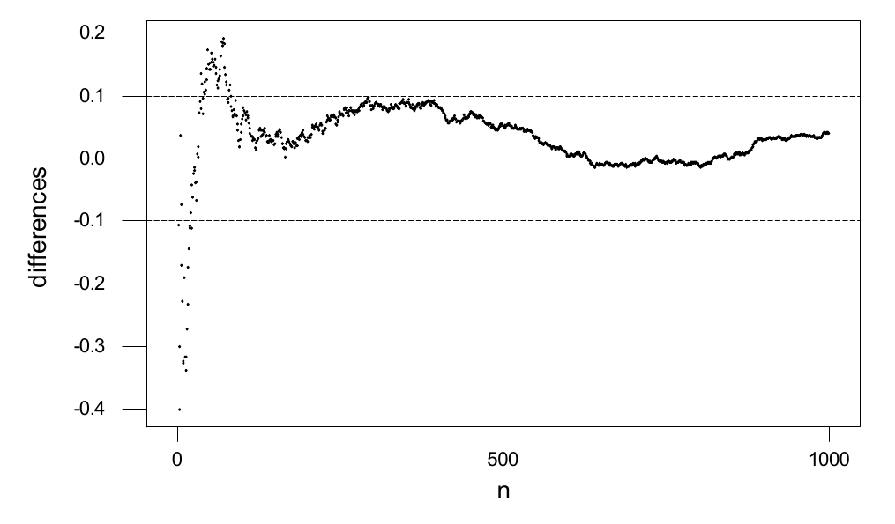
Vejamos um exemplo disso.
Considere novamente a situação do Exemplo 4.2.3, em que \(U \sim \text{Uniforme}[0, 1]\), \[ X_n = \begin{cases} 3 & U \le \frac{2}{3} - \frac{1}{n}\\ 8 & \text{caso contrário} \end{cases} \] e \[ Y = \begin{cases} 3 & U \le \frac{2}{3}\\ 8 & \text{caso contrário.} \end{cases} \] Se \(U > 2/3\), então \(Y = 8\) e também \(X_n = 8\) para todo \(n\), de modo que, claramente, \(X_n \to Y\). Se \(U < 2/3\), então, para \(n\) grande o suficiente, teremos também \[ U \le \frac{2}{3} - \frac{1}{n}, \] e então, de novo, \(X_n \to Y\). Por outro lado, se \(U = 2/3\), teremos sempre \(X_n = 8\), embora \(Y = 3\). Portanto, \(X_n \to Y\) exceto quando \(U = 2/3\). Como \(P(U = 2/3) = 0\), temos de fato \(X_n \to Y\) com probabilidade 1.
Pode-se perguntar qual é a relação entre a convergência em probabilidade e a convergência com probabilidade 1. O teorema a seguir dá uma resposta.
Sejam \(Z, Z_1, Z_2, \ldots\) variáveis aleatórias. Suponha que \(Z_n \to Z\) com probabilidade 1. Então \(Z_n \to Z\) em probabilidade. Isto é, se uma sequência de variáveis aleatórias converge quase certamente, então ela converge em probabilidade para o mesmo limite.
Veja a Seção 4.7 para a demonstração deste resultado.
Por outro lado, a recíproca25 do Teorema 4.3.1 é falsa, como mostra o exemplo a seguir.
Seja \(U\) com distribuição uniforme em \([0, 1]\). Construímos uma sequência infinita de variáveis aleatórias \(\{X_n\}\) fazendo \begin{align*} X_1 &= I_{[0, 1/2)}(U),\ X_2 = I_{[1/2, 1]}(U),\\ X_3 &= I_{[0, 1/4)}(U),\ X_4 = I_{[1/4, 1/2)}(U),\ X_5 = I_{[1/2, 3/4)}(U),\ X_6 = I_{[3/4, 1]}(U),\\ X_7 &= I_{[0, 1/8)}(U),\ X_8 = I_{[1/8, 1/4)}(U), \ldots\\ &\ \,\vdots \end{align*} em que \(I_A\) é a função indicadora26 do evento \(A\), isto é, \(I_A(s) = 1\) se \(s \in A\) e \(I_A(s) = 0\) se \(s \notin A\).
Note que primeiro subdividimos \([0, 1]\) em dois subintervalos de mesmo comprimento e definimos \(X_1\) e \(X_2\) como as funções indicadoras desses dois subintervalos. Em seguida, subdividimos \([0, 1]\) em quatro subintervalos de mesmo comprimento e definimos \(X_3\), \(X_4\), \(X_5\) e \(X_6\) como as funções indicadoras dos quatro subintervalos. Continuamos esse processo dividindo \([0, 1]\) em oito subintervalos de mesmo comprimento, depois em 16 subintervalos de mesmo comprimento etc., para obter uma sequência infinita de variáveis aleatórias.
Cada uma dessas variáveis aleatórias \(X_n\) assume apenas os valores 0 e 1 e, portanto, tem de seguir uma distribuição de Bernoulli. Em particular, \(X_1 \sim \text{Bernoulli}(1/2)\), \(X_2 \sim \text{Bernoulli}(1/2)\), \(X_3 \sim \text{Bernoulli}(1/4)\) etc.
Então, para \(0 < \epsilon < 1\), temos \(P(\lvert X_n - 0\rvert \ge \epsilon)\) \({}= P(X_n = 1)\). Como os intervalos de \(U\) que tornam \(X_n \ne 0\) ficam cada vez menores, vemos que \(P(X_n = 1)\) converge para 0. Portanto, \(X_n\) converge para 0 em probabilidade.
Por outro lado, \(X_n\) não converge para 0 quase certamente. De fato, seja qual for o valor que \(U\) assuma, sempre haverá infinitos valores diferentes de \(n\) para os quais \(X_n = 1\). Portanto, teremos \(X_n = 1\) infinitas vezes27, de modo que não teremos \(X_n\) convergindo para 0 para nenhum valor particular de \(U\). Assim, \(P(\lim_{n \to \infty} X_n \to 0) = 0\), e \(X_n\) não converge para 0 com probabilidade 1.
O Teorema 4.3.1 e o Exemplo 4.3.2 mostram, juntos, que a convergência com probabilidade 1 é uma noção mais forte que a convergência em probabilidade.
Ora, a lei fraca dos grandes números (Seção 4.2.1) conclui apenas que as médias \(M_n\) convergem em probabilidade para \(E(X_i)\). Uma versão mais forte desse resultado concluiria, em vez disso, a convergência com probabilidade 1. É o que consideramos agora.
4.3.1 A Lei Forte dos Grandes Números
O resultado a seguir é um fortalecimento da lei fraca dos grandes números, porque conclui a convergência com probabilidade 1, e não apenas a convergência em probabilidade.
Seja \(X_1, X_2, \ldots\) uma sequência de variáveis aleatórias i.i.d., cada uma com média finita \(\mu\). Então \[ P\left(\lim_{n \to \infty} M_n = \mu\right) = 1. \] Isto é, as médias convergem com probabilidade 1 para a média comum \(\mu\), ou \(M_n \xrightarrow{\text{q.c.}} \mu\).
Veja A First Look at Rigorous Probability Theory, Second Edition, de J. S. Rosenthal (World Scientific Publishing Co., 2006), para uma demonstração deste resultado.
Esse resultado diz que as médias amostrais convergem com probabilidade 1 para \(\mu\).
Assim como o Teorema 4.2.1, ele diz que, para \(n\) grande, as médias \(M_n\) costumam ficar perto de \(\mu = E(X_i)\). Mas diz, além disso, que, se esperarmos o bastante (isto é, se \(n\) for grande o suficiente), então, a partir de algum momento, as médias ficarão todas perto de \(\mu\), para todo \(n\) suficientemente grande. Em outras palavras, a média amostral é consistente para \(\mu\).
Resumo da Seção 4.3
- Uma sequência \(\{X_n\}\) de variáveis aleatórias converge com probabilidade 1 (ou converge quase certamente) para \(Y\) se \(P(\lim_{n \to \infty} X_n = Y) = 1\).
- A convergência com probabilidade 1 implica a convergência em probabilidade.
- A lei forte dos grandes números diz que, se \(\{X_n\}\) é i.i.d., então as médias \(M_n = (X_1 + \cdots + X_n)/n\) convergem com probabilidade 1 para \(E(X_i)\).
Exercícios
4.3.1 Seja \(U \sim \text{Uniforme}[5, 10]\), e sejam \(Z = I_{[5, 7)}(U)\) (isto é, \(Z\) é a função indicadora de \([5, 7)\)) e \(Z_n = I_{[5, 7 + 1/n^2)}(U)\). Prove que \(Z_n \to Z\) com probabilidade 1.
4.3.2 Seja \(Y \sim \text{Uniforme}[0, 1]\), e seja \(X_n = Y^n\). Prove que \(X_n \to 0\) com probabilidade 1.
4.3.3 Sejam \(W_1, W_2, \ldots\) i.i.d. com distribuição \(\text{Exponencial}(3)\). Prove que, com probabilidade 1, para algum \(n\), temos \(W_1 + W_2 + \cdots + W_n < n/2\).
4.3.4 Sejam \(Y_1, Y_2, \ldots\) i.i.d. com distribuição \(N(2, 5)\). Prove que, com probabilidade 1, para algum \(n\), temos \(Y_1 + Y_2 + \cdots + Y_n > n\).
4.3.5 Suponha que \(X_n \to X\) com probabilidade 1 e também que \(Y_n \to Y\) com probabilidade 1. Prove que \(P(X_n \to X \text{ e } Y_n \to Y) = 1\).
4.3.6 Suponha que \(Z_1, Z_2, \ldots\) sejam i.i.d. com média finita \(\mu\). Seja \(M_n = (Z_1 + \cdots + Z_n)/n\). Determine (com justificativa) se as afirmações a seguir são verdadeiras ou falsas. (a) Com probabilidade 1, \(M_n = \mu\) para algum \(n\).(b) Com probabilidade 1, \(\mu - 0{,}01 < M_n < \mu + 0{,}01\) para algum \(n\).(c) Com probabilidade 1, \(\mu - 0{,}01 < M_n < \mu + 0{,}01\) para todo \(n\), exceto um número finito deles.(d) Para qualquer \(x \in R^1\), com probabilidade 1, \(x - 0{,}01 < M_n < x + 0{,}01\) para algum \(n\).
4.3.7 Seja \(\{X_n\}\) i.i.d., com \(X_n \sim \text{Uniforme}[3, 7]\). Seja \(Y_n = (X_1 + X_2 + \cdots + X_n)/n\). Encontre (com demonstração) um número \(m\) tal que \(Y_n \xrightarrow{\text{q.c.}} m\). (Sugestão: use a lei forte dos grandes números.)
4.3.8 Seja \(Z_n\) a soma dos quadrados dos números obtidos quando lançamos \(n\) dados honestos. Encontre (com demonstração) um número \(m\) tal que \(\frac{1}{n} Z_n \xrightarrow{\text{q.c.}} m\).
4.3.9 Considere o lançamento de \(n\) moedas honestas de 5 centavos e de \(n\) moedas honestas de 10 centavos. Seja \(X_n\) igual a 4 vezes o número de moedas de 5 centavos que dão cara mais 5 vezes o número de moedas de 10 centavos que dão cara. Encontre (com demonstração) um número \(r\) tal que \(\frac{1}{n} X_n \xrightarrow{\text{q.c.}} r\).
4.3.10 Suponha que \(Y_n \xrightarrow{\text{q.c.}} Y\). Isso implica que \(P(\lvert Y_5 - Y\rvert > \lvert Y_4 - Y\rvert)\) \({}= 0\)? Explique.
4.3.11 Considere lançar repetidamente uma moeda honesta. Seja \(H_n\) o número de caras nos \(n\) primeiros lançamentos, e seja \(Z_n = H_n/n\). (a) Prove que, com probabilidade 1, existe algum \(m\) tal que \(\lvert Z_n - 1/2\rvert < 0{,}001\) para todo \(n \ge m\).(b) Seja \(r\) o menor inteiro positivo que satisfaz \(\lvert Z_r - 1/2\rvert < 0{,}001\). É necessariamente verdade que \(\lvert Z_n - 1/2\rvert < 0{,}001\) para todo \(n \ge r\)? Por quê?
4.3.12 Suponha que \(P(X = 0) = P(X = 1) = 1/2\), e seja \(X_n = X\) para \(n = 1, 2, 3, \ldots\). (Isto é, as variáveis aleatórias \(X_n\) são todas idênticas.) Seja \(Y_n = (X_1 + X_2 + \cdots + X_n)/n\). (a) Prove que \(P(\lim_{n \to \infty} Y_n = 0)\) \({}= P(\lim_{n \to \infty} Y_n = 1)\) \({}= 1/2\).(b) Prove que não existe um número \(m\) tal que \(P(\lim_{n \to \infty} Y_n = m) = 1\).(c) Por que a parte (b) não contradiz a lei dos grandes números29?
Exercícios computacionais
4.3.13 Gere \(X_1, \ldots, X_n\) i.i.d. com distribuição \(\text{Exponencial}(5)\), com \(n\) grande (tome \(n = 10^5\), se possível). Faça o gráfico dos valores \(M_1, M_2, \ldots, M_n\). Para que valor eles estão convergindo? Com que rapidez?
4.3.14 Gere \(X_1, \ldots, X_n\) i.i.d. com distribuição \(\text{Poisson}(7)\), com \(n\) grande (tome \(n = 10^5\), se possível). Faça o gráfico dos valores \(M_1, M_2, \ldots, M_n\). Para que valor eles estão convergindo? Com que rapidez?
4.3.15 Gere \(X_1, X_2, \ldots, X_n\) i.i.d. com distribuição \(N(-4, 3)\), com \(n\) grande (tome \(n = 10^5\), se possível). Faça o gráfico dos valores \(M_1, M_2, \ldots, M_n\). Para que valor eles estão convergindo? Com que rapidez?
Problemas
4.3.16 Suponha que, para cada inteiro positivo \(k\), existam variáveis aleatórias \(W_k, X_{k,1}, X_{k,2}, \ldots\) tais que \(P(\lim_{n \to \infty} X_{k,n} = W_k) = 1\). Prove que \(P(\lim_{n \to \infty} X_{k,n} = W_k \text{ para todo } k)\) \({}= 1\).
4.3.17 Prove que \(X_n \xrightarrow{\text{q.c.}} 0\) se e somente se \(\lvert X_n\rvert \xrightarrow{\text{q.c.}} 0\).
4.3.18 Prove ou refute: \(X_n \xrightarrow{\text{q.c.}} 5\) se e somente se \(\lvert X_n\rvert \xrightarrow{\text{q.c.}} 5\).
4.3.19 Suponha que \(X_n \xrightarrow{\text{q.c.}} X\) e \(Y_n \xrightarrow{\text{q.c.}} Y\). Sejam \(Z_n = X_n + Y_n\) e \(Z = X + Y\). Prove que \(Z_n \xrightarrow{\text{q.c.}} Z\).
Desafios
4.3.20 Suponha que, para cada número real \(r \in [0, 1]\), existam variáveis aleatórias \(W_r, X_{r,1}, X_{r,2}, \ldots\) tais que \(P(\lim_{n \to \infty} X_{r,n} = W_r) = 1\). Prove ou refute que devemos ter \(P(\lim_{n \to \infty} X_{n,r} = W_r \text{ para todo } r \in [0, 1])\) \({}= 1\). 30
4.3.21 Dê um exemplo de variáveis aleatórias \(X_1, X_2, \ldots\) tais que \(\{X_n\}\) converge para 0 com probabilidade 1, mas \(E(X_n) = 1\) para todo \(n\).
4.3.22 Suponha que \(X_n \xrightarrow{\text{q.c.}} X\) e que \(f\) seja uma função contínua. Prove que \(f(X_n) \xrightarrow{\text{q.c.}} f(X)\).
4.4 Convergência em Distribuição
Há ainda outra noção de convergência de uma sequência de variáveis aleatórias que é importante nas aplicações da probabilidade e da estatística.
Sejam \(X, X_1, X_2, \ldots\) variáveis aleatórias. Dizemos que a sequência \(\{X_n\}\) converge em distribuição para \(X\) se, para todo \(x \in R^1\) tal que \(P(X = x) = 0\), tivermos \(\lim_{n \to \infty} P(X_n \le x)\) \({}= P(X \le x)\), e escrevemos \(X_n \xrightarrow{D} X\).
Intuitivamente, \(\{X_n\}\) converge em distribuição para \(X\) se, para \(n\) grande, a distribuição de \(X_n\) está próxima da de \(X\). A importância disso, como veremos, é que muitas vezes é difícil trabalhar com a distribuição de \(X_n\), enquanto a de \(X\) é muito mais simples. Com \(X_n\) convergindo em distribuição para \(X\), porém, podemos aproximar a distribuição de \(X_n\) pela de \(X\).
Suponha que \(P(X_n = 1) = 1/n\) e \(P(X_n = 0) = 1 - 1/n\). Seja \(X = 0\), de modo que \(P(X = 0) = 1\). Então \[ P(X_n \le x) = \begin{cases} 0 & x < 0\\ 1 - 1/n & 0 \le x < 1\\ 1 & 1 \le x \end{cases} \;\to\; P(X \le x) = \begin{cases} 0 & x < 0\\ 1 & 0 \le x \end{cases} \] quando \(n \to \infty\). Como \(P(X_n \le x) \to P(X \le x)\) para todo \(x\), e em particular em todo \(x\) em que \(P(X = x) = 0\), temos que \(\{X_n\}\) converge em distribuição para \(X\). Intuitivamente, quando \(n \to \infty\), fica cada vez mais provável que \(X_n\) seja igual a 0.
Suponha que \(P(X_n = 1) = 1/2 + 1/n\) e \(P(X_n = 0) = 1/2 - 1/n\). Suponha, além disso, que \(P(X = 0) = P(X = 1) = 1/2\). Então \(\{X_n\}\) converge em distribuição para \(X\), porque \(P(X_n = 1) \to 1/2\) e \(P(X_n = 0) \to 1/2\) quando \(n \to \infty\).
Seja \(X \sim \text{Uniforme}[0, 1]\) e seja \(P(X_n = i/n) = 1/n\) para \(i = 1, 2, \ldots, n\). Então \(X\) é absolutamente contínua31, enquanto \(X_n\) é discreta. Por outro lado, para qualquer \(0 \le x \le 1\), temos \(P(X \le x) = x\) e, denotando por \(\lfloor x \rfloor\) o maior inteiro menor ou igual a \(x\), temos \[ P(X_n \le x) = \frac{\lfloor nx \rfloor}{n}. \] Logo, \(\lvert P(X_n \le x) - P(X \le x)\rvert \le 1/n\) para todo \(n\). Como \(\lim_{n \to \infty} 1/n = 0\), temos de fato \(X_n \to X\) em distribuição.
Suponha que \(X_1, X_2, \ldots\) sejam i.i.d. com média finita \(\mu\) e que \(M_n = (X_1 + \cdots + X_n)/n\). Então a lei fraca dos grandes números diz que, para qualquer \(\epsilon > 0\), temos \[ P(M_n \le \mu - \epsilon) \to 0 \quad \text{e} \quad P(M_n \le \mu + \epsilon) \to 1 \] quando \(n \to \infty\). Segue que \(\lim_{n \to \infty} P(M_n \le x)\) \({}= P(M \le x)\) para qualquer \(x \ne \mu\), em que \(M\) é a variável aleatória constante \(M = \mu\). Logo, \(M_n \to M\) em distribuição. Observe que não é necessariamente verdade que \(P(M_n \le \mu) \to P(M \le \mu) = 1\). Isso, porém, não contradiz a definição de convergência em distribuição32, porque \(P(M = \mu) \ne 0\), de modo que não precisamos nos preocupar com o caso \(x = \mu\).
Suponha que \(X_n \sim \text{Binomial}(n, \lambda/n)\) e \(X \sim \text{Poisson}(\lambda)\). Vimos no Exemplo 2.3.6 que \[ P(X_n = j) = \binom{n}{j} \left(\frac{\lambda}{n}\right)^{j} \left(1 - \frac{\lambda}{n}\right)^{n - j} \to e^{-\lambda} \frac{\lambda^j}{j!} \] quando \(n \to \infty\). Isso implica que \(F_{X_n}(x) \to F_X(x)\) em todo ponto \(x \notin \{0, 1, 2, \ldots\}\), e esses são exatamente os pontos em que \(P(X = x) = 0\). Portanto, \(\{X_n\}\) converge em distribuição para \(X\). (Na verdade, foi essa a nossa motivação original para a distribuição de Poisson.)
Muitos outros exemplos de convergência em distribuição são dados pelo teorema central do limite, discutido na próxima seção. Antes, paramos para considerar a relação entre a convergência em distribuição e as noções de convergência anteriores.
Se \(X_n \xrightarrow{P} X\), então \(X_n \xrightarrow{D} X\).
Veja a Seção 4.7 para a demonstração deste resultado.
A recíproca do Teorema 4.4.1 é falsa. De fato, o fato de \(X_n\) convergir em distribuição para \(X\) não diz nada sobre a relação subjacente entre \(X_n\) e \(X\); diz apenas algo sobre as distribuições delas. O exemplo a seguir ilustra isso.
Suponha que \(X, X_1, X_2, \ldots\) sejam i.i.d., cada uma igual a \(\pm 1\) com probabilidade \(1/2\) cada. Neste caso, \(P(X_n \le x) = P(X \le x)\) para todo \(n\) e todo \(x \in R^1\), de modo que, é claro, \(X_n\) converge em distribuição para \(X\). Por outro lado, como \(X\) e \(X_n\) são independentes, \[ P(\lvert X - X_n\rvert \ge 2) = \frac{1}{2} \] para todo \(n\), o que não tende a 0 quando \(n \to \infty\). Logo, \(X_n\) não converge para \(X\) em probabilidade (nem com probabilidade 1). Assim, podemos ter convergência em distribuição sem convergência em probabilidade nem convergência com probabilidade 1.
O resultado a seguir, enunciado sem demonstração, indica como as funções geradoras de momentos podem ser usadas para verificar a convergência em distribuição. (Ele generaliza o Teorema 3.4.6.)
Seja \(X\) uma variável aleatória tal que, para algum \(s_0 > 0\), temos \(m_X(s) < \infty\) sempre que \(s \in (-s_0, s_0)\). Se \(Z_1, Z_2, \ldots\) é uma sequência de variáveis aleatórias com \(m_{Z_n}(s) < \infty\) e \(\lim_{n \to \infty} m_{Z_n}(s) = m_X(s)\) para todo \(s \in (-s_0, s_0)\), então \(\{Z_n\}\) converge para \(X\) em distribuição.
Usaremos esse resultado para provar um dos teoremas mais famosos da probabilidade: o teorema central do limite.
Por fim, observamos que combinar o Teorema 4.4.1 com o Teorema 4.3.1 revela o seguinte.
Se \(X_n \to X\) com probabilidade 1, então \(X_n \xrightarrow{D} X\).
4.4.1 O Teorema Central do Limite
Apresentamos agora o teorema central do limite, um dos resultados mais importantes de toda a teoria da probabilidade. Intuitivamente, ele diz que uma soma grande de variáveis aleatórias i.i.d., normalizada de forma adequada, terá sempre distribuição aproximadamente normal. Isso mostra que a distribuição normal é extremamente fundamental em probabilidade e estatística, embora sua função densidade seja complicada e sua função de distribuição acumulada33 seja intratável.
Suponha que \(X_1, X_2, \ldots\) seja uma sequência i.i.d. de variáveis aleatórias, cada uma com média finita \(\mu\) e variância finita \(\sigma^2\). Seja \(S_n = X_1 + \cdots + X_n\) a soma amostral34 e \(M_n = S_n/n\) a média amostral. O teorema central do limite trata da distribuição da variável aleatória \[ Z_n = \frac{S_n - n\mu}{\sqrt{n}\,\sigma} = \frac{M_n - \mu}{\sigma/\sqrt{n}} = \sqrt{n} \left(\frac{M_n - \mu}{\sigma}\right), \] em que \(\sigma = \sqrt{\sigma^2}\). Sabemos que \(E(M_n) = \mu\) e \(\Var(M_n) = \sigma^2/n\), o que implica \(E(Z_n) = 0\) e \(\Var(Z_n) = 1\). A variável \(Z_n\) é obtida, portanto, da média amostral (ou da soma amostral) subtraindo sua média e dividindo pelo seu desvio padrão. Essa transformação é chamada de padronização de uma variável aleatória, para que ela tenha média 0 e variância 1. Portanto, \(Z_n\) é a versão padronizada35 da média amostral (da soma amostral).
Observe que a distribuição de \(Z_n\) tem duas características em comum com a distribuição \(N(0, 1)\): média 0 e variância 1. O teorema central do limite mostra que há uma relação ainda mais forte.
Sejam \(X_1, X_2, \ldots\) i.i.d. com média finita \(\mu\) e variância finita \(\sigma^2\). Seja \(Z \sim N(0, 1)\). Então, quando \(n \to \infty\), a sequência \(\{Z_n\}\) converge em distribuição para \(Z\), isto é, \(Z_n \xrightarrow{D} Z\).
Veja a Seção 4.7 para a demonstração deste resultado.
O teorema central do limite é tão importante que vamos reenunciar suas conclusões de várias maneiras diferentes.
Para cada \(x \in R^1\) fixo, \(\lim_{n \to \infty} P(Z_n \le x) = \Phi(x)\), em que \(\Phi\) é a função de distribuição acumulada da distribuição normal padrão36.
Podemos escrever isso da seguinte forma.
Para cada \(x \in R^1\) fixo, \begin{gather*} \lim_{n \to \infty} P(S_n \le n\mu + x\sqrt{n}\,\sigma) = \Phi(x) \quad \text{e} \\ \lim_{n \to \infty} P(M_n \le \mu + x\sigma/\sqrt{n}) = \Phi(x). \end{gather*} Em particular, \(S_n\) é aproximadamente igual a \(n\mu\), com desvios desse valor da ordem de \(\sqrt{n}\), e \(M_n\) é aproximadamente igual a \(\mu\), com desvios desse valor da ordem de \(1/\sqrt{n}\).
Observamos que não é essencial, no teorema central do limite, dividir por \(\sigma\); nesse caso, o teorema afirma, em vez disso, que \((S_n - n\mu)/\sqrt{n}\) (ou \(\sqrt{n}\,(M_n - \mu)\)) converge em distribuição para a distribuição \(N(0, \sigma^2)\). Isto é, a distribuição limite ainda será normal, mas terá variância \(\sigma^2\) em vez de variância 1.
Da mesma forma, em vez de dividir exatamente por \(\sigma\), basta dividir por qualquer quantidade \(\sigma_n\), desde que \(\sigma_n \xrightarrow{\text{q.c.}} \sigma\). Uma modificação simples da demonstração do Teorema 4.4.2 leva ao resultado a seguir.
Se \[ Z_n^{*} = \frac{S_n - n\mu}{\sqrt{n}\,\sigma_n} = \frac{M_n - \mu}{\sigma_n/\sqrt{n}} = \sqrt{n} \left(\frac{M_n - \mu}{\sigma_n}\right) \] e \(\lim_{n \to \infty} \sigma_n \xrightarrow{\text{q.c.}} \sigma\), então \(Z_n^{*} \xrightarrow{D} Z\) quando \(n \to \infty\).
Para ilustrar o teorema central do limite, consideramos um experimento de simulação.
Suponha que geramos uma amostra \(X_1, \ldots, X_n\) da densidade \(\text{Uniforme}[0, 1]\). Observe que a densidade \(\text{Uniforme}[0, 1]\) é completamente diferente de uma densidade normal. Uma conta fácil mostra que, quando \(X \sim \text{Uniforme}[0, 1]\), então \(E(X) = 1/2\) e \(\Var(X) = 1/12\).
Suponha agora que estamos interessados na distribuição da média amostral \(M_n = S_n/n = (X_1 + \cdots + X_n)/n\) para várias escolhas de \(n\). O teorema central do limite nos diz que \[ Z_n = \frac{S_n - n/2}{\sqrt{n/12}} = \sqrt{n} \left(\frac{M_n - 1/2}{\sqrt{1/12}}\right) \] converge em distribuição para uma distribuição \(N(0, 1)\). Mas quão grande \(n\) precisa ser para que essa aproximação seja precisa?
Para avaliar isso, fizemos um experimento de simulação de Monte Carlo37. Na Figura 4.4.1, traçamos um histograma de densidade de \(N = 10^5\) valores da distribuição \(N(0, 1)\), com base em 800 subintervalos de \((-4, 4)\), cada um de comprimento \(l = 0{,}01\). Os histogramas de densidade são discutidos mais a fundo na Seção 5.4.3, mas, por ora, observamos que, acima de cada intervalo, traçamos a proporção dos valores amostrados que caíram no intervalo, dividida pelo comprimento do intervalo. À medida que aumentamos \(N\) e diminuímos \(l\), esses histogramas se parecem cada vez mais com a densidade da distribuição da qual estamos amostrando. De fato, a Figura 4.4.1 se parece muito com uma densidade \(N(0, 1)\), como deveria.
Na Figura 4.4.2, traçamos um histograma de densidade (usando os mesmos valores de \(N\) e \(l\)) de \(Z_1\). Observe que \(Z_1 \sim \text{Uniforme}[-\sqrt{12}/2, \sqrt{12}/2]\) e, de fato, o histograma se parece com uma densidade uniforme. A Figura 4.4.3 apresenta um histograma de densidade de \(Z_2\), que ainda parece muito pouco normal; mas observe que o histograma de \(Z_3\), na Figura 4.4.4, já começa a se parecer mais com uma distribuição normal. O histograma de \(Z_{10}\), na Figura 4.4.5, parece muito normal. Na verdade, a proporção de valores de \(Z_{10}\) em \((-\infty; 1{,}96]\), nesse histograma, é igual a 0,9759, enquanto a proporção exata para uma distribuição \(N(0, 1)\) é 0,9750.
Assim, neste exemplo, o teorema central do limite fez efeito muito rapidamente, mesmo estando nós amostrando de uma distribuição muito diferente da normal. Acontece que são principalmente as caudas de uma distribuição que determinam quão grande \(n\) precisa ser para que a aproximação do teorema central do limite seja precisa. Quando uma distribuição tem caudas que não são mais pesadas que as de uma distribuição normal, podemos esperar que a aproximação seja bastante precisa para tamanhos amostrais relativamente pequenos.
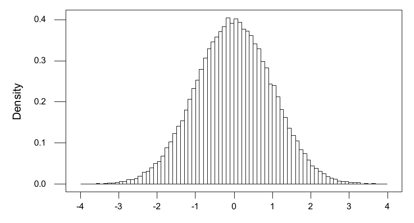
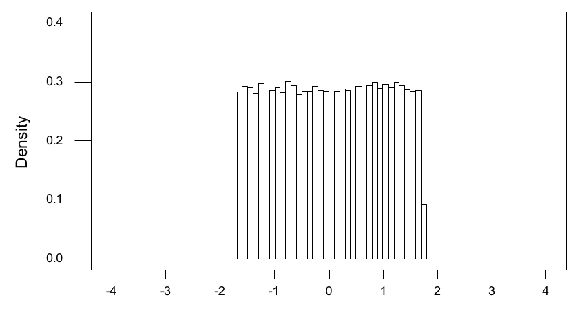
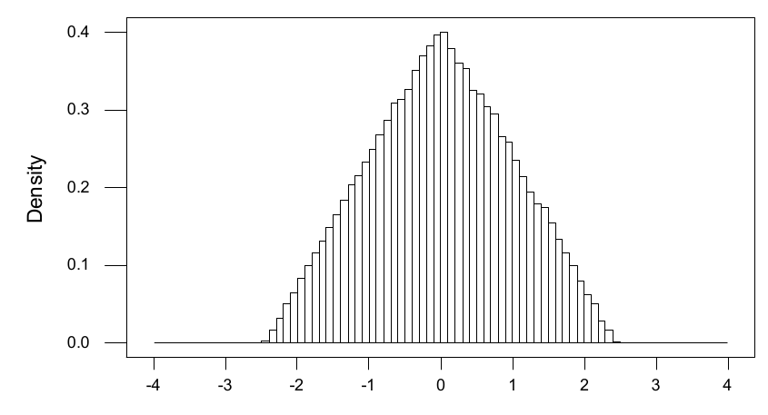
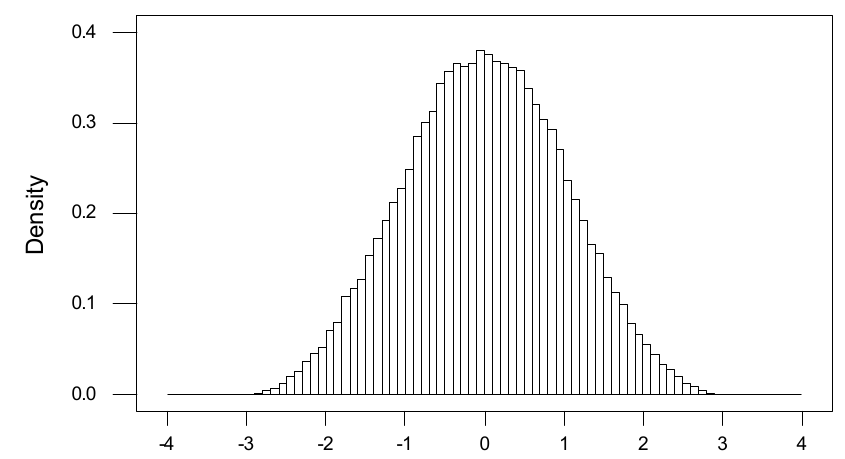
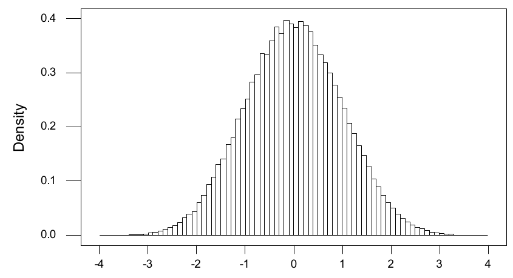
Consideramos algumas outras aplicações do teorema central do limite.
Por exemplo, suponha que \(X_1, X_2, \ldots\) sejam variáveis aleatórias i.i.d., cada uma com distribuição \(\text{Poisson}(5)\). Lembre que isso implica \(\mu = E(X_i) = 5\) e \(\sigma^2 = \Var(X_i) = 5\). Logo, para cada \(x \in R^1\) fixo, temos \[ P\left(S_n \le 5n + x\sqrt{5n}\right) \to \Phi(x) \] quando \(n \to \infty\).
Suponha que \(X_1, X_2, \ldots\) sejam variáveis aleatórias i.i.d., cada uma com distribuição \(\text{Bernoulli}(\theta)\). Lembre que isso implica \(E(X_i) = \theta\) e \(v = \Var(X_i) = \theta(1 - \theta)\). Logo, para cada \(x \in R^1\) fixo, temos \begin{equation} P\left(S_n \le n\theta + x\sqrt{n\theta(1 - \theta)}\right) \to \Phi(x), \tag{4.4.1} \end{equation} quando \(n \to \infty\).
Mas observe agora que já mostramos que \(Y_n = S_n \sim \text{Binomial}(n, \theta)\). Então (4.4.1) implica que, sempre que tivermos uma variável aleatória \(Y_n \sim \text{Binomial}(n, \theta)\), \begin{equation} \begin{split} P(Y_n \le y) &= P\left(\frac{Y_n - n\theta}{\sqrt{n\theta(1 - \theta)}} \le \frac{y - n\theta}{\sqrt{n\theta(1 - \theta)}}\right)\\ &\approx \Phi\left(\frac{y - n\theta}{\sqrt{n\theta(1 - \theta)}}\right) \end{split} \tag{4.4.2} \end{equation} para \(n\) grande.
Observe que aqui estamos aproximando uma distribuição discreta por uma distribuição contínua. Por causa disso, muitas vezes se faz uma pequena melhoria em (4.4.2) quando \(y\) é um inteiro não negativo38. Em vez dela, usamos \[ P(Y_n \le y) \approx \Phi\left(\frac{y + 0{,}5 - n\theta}{\sqrt{n\theta(1 - \theta)}}\right). \] Somar 0,5 a \(y\) é chamado de correção de continuidade39. Na prática, isso atribui toda a probabilidade normal relevante do intervalo \((y - 0{,}5; y + 0{,}5)\) ao inteiro não negativo \(y\). Já se mostrou que isso melhora a aproximação (4.4.2).
Embora existam tabelas para a distribuição binomial (Tabela D.6), muitas vezes precisamos calcular probabilidades binomiais em situações que as tabelas não cobrem. Sempre podemos usar um software estatístico para isso; na verdade, esses softwares usam a aproximação normal que deduzimos do teorema central do limite.
Por exemplo, suponha que temos uma moeda viciada, em que a probabilidade de obter cara num único lançamento é \(\theta = 0{,}6\). Vamos lançar a moeda \(n = 1000\) vezes e então calcular a probabilidade de obter pelo menos 550 caras e no máximo 625 caras. Se \(Y\) denota o número de caras obtidas nos 1000 lançamentos, temos \(Y \sim \text{Binomial}(1000; 0{,}6)\), de modo que \begin{align*} E(Y) &= 1000\,(0{,}6) = 600,\\ \Var(Y) &= 1000\,(0{,}6)\,(0{,}4) = 240. \end{align*} Portanto, usando a correção de continuidade e a Tabela D.2, \begin{align*} P(550 \le Y \le 625) &= P(550 - 0{,}5 \le Y \le 625 + 0{,}5)\\ &= P\left(\frac{549{,}5 - 600}{\sqrt{240}} \le \frac{Y - 600}{\sqrt{240}} \le \frac{625{,}5 - 600}{\sqrt{240}}\right)\\ &= P\left(-3{,}2598 \le \frac{Y - 600}{\sqrt{240}} \le 1{,}646\right)\\ &\approx \Phi(1{,}65) - \Phi(-3{,}26) = 0{,}9505 - 0{,}0006 = 0{,}9499. \end{align*} Observe que seria impossível calcular essa probabilidade usando as fórmulas da distribuição binomial.
Um dos usos mais importantes do teorema central do limite é que ele leva a um método para avaliar o erro de uma média quando ela está estimando ou aproximando alguma quantidade de interesse.
4.4.2 O Teorema Central do Limite e a Avaliação do Erro
Suponha que \(X_1, X_2, \ldots\) seja uma sequência i.i.d. de variáveis aleatórias, cada uma com média finita \(\mu\) e variância finita \(\sigma^2\), e que estejamos usando a média amostral \(M_n\) para aproximar a média \(\mu\). Essa situação surge com frequência em muitos problemas computacionais (ver a Seção 4.5) e estatísticos (ver o Capítulo 6). Nesse contexto, podemos gerar os \(X_i\), mas não conhecemos o valor de \(\mu\).
Se aproximamos \(\mu\) por \(M_n\), uma pergunta natural é: quanto erro há na aproximação? O teorema central do limite nos diz que \begin{align*} \Phi(3) - \Phi(-3) &= \lim_{n \to \infty} P\left(-3 < \frac{M_n - \mu}{\sigma/\sqrt{n}} < 3\right)\\ &= \lim_{n \to \infty} P\left(M_n - 3\frac{\sigma}{\sqrt{n}} < \mu < M_n + 3\frac{\sigma}{\sqrt{n}}\right). \end{align*} Usando a Tabela D.2 (ou um software estatístico), temos \(\Phi(3) - \Phi(-3)\) \({}= 0{,}9987 - (1 - 0{,}9987)\) \({}= 0{,}9974\). Assim, para \(n\) grande, temos que o intervalo \[ \left(M_n - 3\sigma/\sqrt{n}, M_n + 3\sigma/\sqrt{n}\right) \] contém o valor desconhecido de \(\mu\) praticamente com certeza40 (na verdade, com probabilidade de cerca de 0,9974). Portanto, o semicomprimento41 \(3\sigma/\sqrt{n}\) desse intervalo nos dá uma avaliação do erro da aproximação \(M_n\). Observe que \(\Var(M_n) = \sigma^2/n\), de modo que o semicomprimento do intervalo é igual a 3 desvios padrão da estimativa \(M_n\).
Como não conhecemos \(\mu\), é extremamente improvável que conheçamos \(\sigma\) (já que sua definição usa \(\mu\)). Mas, se conseguirmos encontrar uma estimativa consistente42 \(\sigma_n\) de \(\sigma\), então podemos usar o Corolário 4.4.4 para construir esse intervalo.
Acontece que a escolha correta de \(\sigma_n\) depende do que sabemos sobre a distribuição da qual estamos amostrando (ver o Capítulo 6 para mais discussão sobre isso). Por exemplo, se \(X_1 \sim \text{Bernoulli}(\theta)\), então \(\mu = \theta\) e \(\sigma^2 = \Var(X_1) = \theta(1 - \theta)\). Pela lei forte dos grandes números (Teorema 4.3.2), \(M_n \xrightarrow{\text{q.c.}} \mu = \theta\) e, assim, \[ \sigma_n = \sqrt{M_n(1 - M_n)} \xrightarrow{\text{q.c.}} \sqrt{\theta(1 - \theta)} = \sigma. \] Então, usando o mesmo argumento de antes, temos que, para \(n\) grande, o intervalo \begin{equation} \left(M_n - 3\sqrt{M_n(1 - M_n)/n}, M_n + 3\sqrt{M_n(1 - M_n)/n}\right) \tag{4.4.3} \end{equation} contém o verdadeiro valor de \(\theta\) praticamente com certeza (de novo, com probabilidade de cerca de 0,9974). O semicomprimento de (4.4.3) é uma medida da precisão da estimativa \(M_n\); observe que ele pode ser calculado a partir dos valores \(X_1, \ldots, X_n\). Chamamos a quantidade \((M_n(1 - M_n)/n)^{1/2}\) de erro padrão43 da estimativa \(M_n\).
Para uma variável aleatória \(X_1\) geral, seja \begin{align*} \sigma_n^2 &= \frac{1}{n - 1} \sum_{i=1}^{n} (X_i - M_n)^2 = \frac{1}{n - 1} \left(\sum_{i=1}^{n} X_i^2 - 2M_n \sum_{i=1}^{n} X_i + nM_n^2\right)\\ &= \frac{n}{n - 1} \left(\frac{1}{n} \sum_{i=1}^{n} X_i^2 - 2M_n^2 + M_n^2\right) = \frac{n}{n - 1} \left(\frac{1}{n} \sum_{i=1}^{n} X_i^2 - M_n^2\right). \end{align*} Pela lei forte dos grandes números, temos \(M_n \xrightarrow{\text{q.c.}} \mu\) e \[ \frac{1}{n} \sum_{i=1}^{n} X_i^2 \xrightarrow{\text{q.c.}} E\left(X_1^2\right) = \sigma^2 + \mu^2. \] Como \(n/(n - 1) \to 1\) e também \(M_n^2 \xrightarrow{\text{q.c.}} \mu^2\), concluímos que \(\sigma_n^2 \xrightarrow{\text{q.c.}} \sigma^2\). Isso implica que \(\sigma_n \xrightarrow{\text{q.c.}} \sigma\); logo, \(\sigma_n\) é consistente para \(\sigma\). É comum chamar \(\sigma_n^2\) de variância amostral da amostra \(X_1, \ldots, X_n\). Quando o tamanho da amostra \(n\) está fixo, muitas vezes denotaremos essa estimativa da variância por \(S^2\).
De novo, usando o argumento acima, temos que, para \(n\) grande, o intervalo \begin{equation} \left(M_n - 3\sigma_n/\sqrt{n}, M_n + 3\sigma_n/\sqrt{n}\right) = \left(M_n - 3S/\sqrt{n}, M_n + 3S/\sqrt{n}\right) \tag{4.4.4} \end{equation} contém o verdadeiro valor de \(\mu\) praticamente com certeza (também com probabilidade de cerca de 0,9974). Portanto, o semicomprimento é uma medida da precisão da estimativa \(M_n\); observe que ele pode ser calculado a partir dos valores \(X_1, \ldots, X_n\). A quantidade \(S/\sqrt{n}\) é chamada de erro padrão da estimativa \(M_n\).
Usaremos essas estimativas do erro das aproximações na próxima seção.
Resumo da Seção 4.4
- Uma sequência \(\{X_n\}\) de variáveis aleatórias converge em distribuição para \(Y\) se, para todo \(y \in R^1\) com \(P(Y = y) = 0\), temos \(\lim_{n \to \infty} F_{X_n}(y) = F_Y(y)\), isto é, \(\lim_{n \to \infty} P(X_n \le y)\) \({}= P(Y \le y)\).
- Se \(\{X_n\}\) converge para \(Y\) em probabilidade (ou com probabilidade 1), então \(\{X_n\}\) converge para \(Y\) em distribuição.
- O importantíssimo teorema central do limite diz que, se as \(\{X_n\}\) são i.i.d. com média \(\mu\) e variância \(\sigma^2\) finitas, então as variáveis aleatórias \(Z_n = (S_n - n\mu)/\sqrt{n}\,\sigma\) convergem em distribuição para uma distribuição normal padrão.
- O teorema central do limite nos permite aproximar diversas distribuições por distribuições normais, o que é útil em experimentos de simulação e em muitos outros contextos. A Tabela D.2 (ou qualquer pacote de software estatístico) fornece valores da função de distribuição acumulada de uma normal padrão.
Exercícios
4.4.1 Suponha que \(P(X_n = i) = (n + i)/(3n + 6)\) para \(i = 1, 2, 3\). Suponha também que \(P(X = i) = 1/3\) para \(i = 1, 2, 3\). Prove que \(\{X_n\}\) converge em distribuição para \(X\).
4.4.2 Suponha que \(P(Y_n = k) = (1 - 2^{-n-1})^{-1}/2^{k+1}\) para \(k = 0, 1, \ldots, n\). Seja \(Y \sim \text{Geométrica}(1/2)\). Prove que \(\{Y_n\}\) converge em distribuição para \(Y\).
4.4.3 Seja \(Z_n\) com densidade \((n + 1)x^n\) para \(0 < x < 1\), e 0 caso contrário. Seja \(Z = 1\). Prove que \(\{Z_n\}\) converge em distribuição para \(Z\).
4.4.4 Seja \(W_n\) com densidade \[ \frac{1 + x/n}{1 + 1/2n} \] para \(0 < x < 1\), e 0 caso contrário. Seja \(W \sim \text{Uniforme}[0, 1]\). Prove que \(\{W_n\}\) converge em distribuição para \(W\).
4.4.5 Sejam \(Y_1, Y_2, \ldots\) i.i.d. com distribuição \(\text{Exponencial}(3)\). Use o teorema central do limite e a Tabela D.2 (ou um software) para estimar a probabilidade \(P(\sum_{i=1}^{1600} Y_i \le 540)\).
4.4.6 Sejam \(Z_1, Z_2, \ldots\) i.i.d. com distribuição \(\text{Uniforme}[-20, 10]\). Use o teorema central do limite e a Tabela D.2 (ou um software) para estimar a probabilidade \(P(\sum_{i=1}^{900} Z_i \ge -4470)\).
4.4.7 Sejam \(X_1, X_2, \ldots\) i.i.d. com distribuição \(\text{Geométrica}(1/4)\). Use o teorema central do limite e a Tabela D.2 (ou um software) para estimar a probabilidade \(P(\sum_{i=1}^{800} X_i \ge 2450)\).
4.4.8 Suponha que \(X_n \sim N(0, 1/n)\), isto é, \(X_n\) tem distribuição normal com média 0 e variância \(1/n\). A sequência \(\{X_n\}\) converge em distribuição para alguma variável aleatória? Se sim, qual é a distribuição dessa variável aleatória?
4.4.9 Suponha que \(P(X_n = i/n) = 2i/n(n + 1)\) para \(i = 1, 2, 3, \ldots, n\). Seja \(Z\) com função densidade dada por \(f(z) = 2z\) para \(0 < z < 1\) e, caso contrário, \(f(z) = 0\). (a) Calcule \(P(Z \le y)\) para \(0 < y < 1\).(b) Calcule \(P(X_n \le m/n)\) para algum inteiro \(1 \le m \le n\). (Sugestão: lembre que \(\sum_{i=1}^{m} i = m(m + 1)/2\).)(c) Calcule \(P(X_n \le y)\) para \(0 < y < 1\).(d) Prove que \(X_n \xrightarrow{D} Z\).
4.4.10 Suponha que \(P(Y_n \le y) = 1 - e^{-2ny/(n+1)}\) para todo \(y > 0\). Prove que \(Y_n \xrightarrow{D} Y\), em que \(Y \sim \text{Exponencial}(\lambda)\) para algum \(\lambda > 0\), e calcule \(\lambda\).
4.4.11 Suponha que \(P(Z_n \le z) = 1 - (1 - \frac{3z}{n})^n\) para todo \(0 < z < n/3\). Prove que \(Z_n \xrightarrow{D} Z\), em que \(Z \sim \text{Exponencial}(\lambda)\) para algum \(\lambda > 0\), e calcule \(\lambda\). (Sugestão: lembre, do cálculo, que \(\lim_{n \to \infty} (1 + \frac{c}{n})^n\) \({}= e^c\) para qualquer número real \(c\).)
4.4.12 Suponha que o tempo de atendimento, em minutos, num banco tenha distribuição Exponencial com \(\lambda = 1/2\). Use o teorema central do limite para estimar a probabilidade de que o tempo médio de atendimento dos primeiros \(n\) clientes seja menor que 2,5 minutos, quando: (a) \(n = 16\).(b) \(n = 36\).(c) \(n = 100\).
4.4.13 Suponha que o número de quilogramas de uma liga metálica produzidos por uma fábrica a cada semana seja uniformemente distribuído entre 20 e 30. Use o teorema central do limite para estimar a probabilidade de que a produção do próximo ano seja menor que 1280 quilogramas. (Suponha que um ano tenha exatamente 52 semanas.)
4.4.14 Suponha que o tempo, em dias, até a falha de um componente tenha distribuição Gama com \(\alpha = 5\) e \(\lambda = 1/10\). Quando um componente falha, ele é imediatamente substituído por um componente novo. Use o teorema central do limite para estimar a probabilidade de que 40 componentes, juntos, sejam suficientes para durar pelo menos 6 anos. (Suponha que um ano tenha exatamente 365,25 dias.)
Exercícios computacionais
4.4.15 Gere \(N\) amostras \(X_1, X_2, \ldots, X_{20} \sim \text{Exponencial}(3)\) para \(N\) grande (\(N = 10^4\), se possível). Use essas amostras para estimar a probabilidade \(P(1/6 \le M_{20} \le 1/2)\). Como sua resposta se compara com a aproximação dada pelo teorema central do limite?
4.4.16 Gere \(N\) amostras \(X_1, X_2, \ldots, X_{30} \sim \text{Uniforme}[-20, 10]\) para \(N\) grande (\(N = 10^4\), se possível). Use essas amostras para estimar a probabilidade \(P(M_{30} \le -5)\). Como sua resposta se compara com a aproximação dada pelo teorema central do limite?
4.4.17 Gere \(N\) amostras \(X_1, X_2, \ldots, X_{20} \sim \text{Geométrica}(1/4)\) para \(N\) grande (\(N = 10^4\), se possível). Use essas amostras para estimar a probabilidade \(P(2{,}5 \le M_{20} \le 3{,}3)\). Como sua resposta se compara com a aproximação dada pelo teorema central do limite?
4.4.18 Gere \(N\) amostras \(X_1, X_2, \ldots, X_{20}\) da distribuição de \(\log Z\), em que \(Z \sim \text{Gama}(4, 1)\), para \(N\) grande (\(N = 10^4\), se possível). Use essas amostras para construir um histograma de densidade dos valores de \(M_{20}\). Comente a forma desse gráfico.
4.4.19 Gere \(N\) amostras \(X_1, X_2, \ldots, X_{20}\) da distribuição \(\text{Binomial}(10; 0{,}01)\) para \(N\) grande (\(N = 10^4\), se possível). Use essas amostras para construir um histograma de densidade dos valores de \(M_{20}\). Comente a forma desse gráfico.
Problemas
4.4.20 Seja \(a_1, a_2, \ldots\) uma sequência qualquer de números reais não negativos com \(\sum_i a_i = 1\). Suponha que \(P(X = i) = a_i\) para todo inteiro positivo \(i\). Construa uma sequência \(\{X_n\}\) de variáveis aleatórias absolutamente contínuas tal que \(X_n \to X\) em distribuição.
4.4.21 Seja \(f : [0, 1] \to (0, \infty)\) uma função contínua positiva tal que \(\int_0^1 f(x)\, dx = 1\). Considere variáveis aleatórias \(X\) e \(\{X_n\}\) tais que \(P(a \le X \le b) = \int_a^b f(x)\, dx\) para \(a \le b\) e \[ P\left(X_n = \frac{i}{n}\right) = \frac{f(i/n)}{\sum_{j=1}^{n} f(j/n)} \] para \(i = 1, 2, 3, \ldots, n\). Prove que \(X_n \to X\) em distribuição.
4.4.22 Suponha que \(Y_i = X_i^3\) e que \(X_1, \ldots, X_n\) seja uma amostra de uma distribuição \(N(0, 1)\). Indique como você aproximaria a probabilidade \(P(M_n \le m)\), em que \(M_n = (Y_1 + \cdots + Y_n)/n\).
4.4.23 Suponha que \(Y_i = \cos(2\pi U_i)\) e que \(U_1, \ldots, U_n\) seja uma amostra da distribuição \(\text{Uniforme}[0, 1]\). Indique como você aproximaria a probabilidade \(P(M_n \le m)\), em que \(M_n = (Y_1 + \cdots + Y_n)/n\).
Problemas computacionais
4.4.24 Suponha que \(Y = X^3\) e \(X \sim N(0, 1)\). Gerando uma amostra grande (\(n = 10^4\), se possível) da distribuição de \(Y\), aproxime a probabilidade \(P(Y \le 1)\) e avalie o erro da sua aproximação. Calcule essa probabilidade exatamente e compare-a com a sua aproximação.
4.4.25 Suponha que \(Y = X^3\) e \(X \sim N(0, 1)\). Gerando uma amostra grande (\(n = 10^4\), se possível) da distribuição de \(Y\), aproxime a esperança44 \(E(\cos(X^3))\) e avalie o erro da sua aproximação.
Desafios
4.4.26 Suponha que \(X_n \to C\) em distribuição, em que \(C\) é uma constante. Prove que \(X_n \to C\) em probabilidade. (Isso prova que, se \(X\) é constante, então a recíproca do Teorema 4.4.1 vale, embora não valha para \(X\) geral.)
4.5 Aproximações de Monte Carlo
As leis dos grandes números dizem que, se \(X_1, X_2, \ldots\) é uma sequência i.i.d. de variáveis aleatórias com média \(\mu\) e \[ M_n = \frac{X_1 + \cdots + X_n}{n}, \] então, para \(n\) grande, teremos \(M_n \approx \mu\).
Suponha agora que \(\mu\) seja desconhecida. Então, como discutido na Seção 4.4.2, é possível mudar de perspectiva e usar \(M_n\) (para \(n\) grande) como um estimador, ou aproximação, de \(\mu\). Sempre que aproximamos ou estimamos uma quantidade, também precisamos dizer algo sobre o tamanho do erro da estimativa. É claro que não podemos dizer exatamente qual é esse erro, pois isso exigiria conhecer o valor exato de \(\mu\). Na Seção 4.4.2, porém, mostramos como o teorema central do limite leva a uma abordagem muito natural para avaliar esse erro, usando três vezes o erro padrão da estimativa. Vejamos alguns exemplos.
Considere lançar uma sequência de moedas idênticas, cada uma com probabilidade \(\theta\) de dar cara, mas com \(\theta\) desconhecido. Seja \(M_n\), novamente, a fração das \(n\) primeiras moedas que dão cara. Sabemos então que, para \(n\) grande, é muito provável que \(M_n\) esteja muito próximo de \(\theta\). Portanto, podemos usar \(M_n\) para estimar \(\theta\). Além disso, a discussão da Seção 4.4.2 indica que (4.4.3) é o intervalo relevante a apresentar quando se avalia a precisão da estimativa \(M_n\).
Suponha que acreditamos que certo remédio baixa a pressão arterial, mas não sabemos quanto. Gostaríamos de conhecer a quantidade média \(\mu\) pela qual esse remédio baixa a pressão arterial.
Suponha que observamos \(n\) pacientes (escolhidos ao acaso, de modo que sejam i.i.d.), em que o paciente \(i\) tem pressão arterial \(B_i\) antes de tomar o remédio e pressão arterial \(A_i\) depois. Seja \(X_i = B_i - A_i\). Então \[ M_n = \frac{1}{n} \sum_{i=1}^{n} (B_i - A_i) \] é a redução média da pressão arterial. (Note que \(B_i - A_i\) pode ser negativo para alguns pacientes, e é importante incluir também esses termos negativos na soma.) Então, para \(n\) grande, o valor de \(M_n\) é uma boa estimativa de \(E(X_i) = \mu\). Além disso, a discussão da Seção 4.4.2 indica que (4.4.4) é o intervalo relevante a apresentar quando se avalia a precisão da estimativa \(M_n\).
Estimadores como esses também podem ser usados para estimar quantidades puramente matemáticas, que não envolvem nenhum dado experimental (como moedas ou pacientes), mas que são difíceis demais de calcular diretamente. Nesse caso, esses estimadores são chamados de aproximações de Monte Carlo (nome tirado do cassino do principado de Mônaco, porque elas introduzem aleatoriedade para resolver problemas que não são aleatórios).
Suponha que queremos calcular \[ I = \int_0^1 \cos(x^2) \sin(x^4)\, dx. \] Essa integral não é fácil de resolver exatamente. Mas ela pode ser calculada aproximadamente por uma aproximação de Monte Carlo45, como segue. Note que \[ I = E(\cos(U^2)\, \sin(U^4)), \] em que \(U \sim \text{Uniforme}[0, 1]\). Portanto, para \(n\) grande, a integral \(I\) é aproximadamente igual a \(M_n = (T_1 + \cdots + T_n)/n\), em que \(T_i = \cos(U_i^2) \sin(U_i^4)\) e em que \(U_1, U_2, \ldots\) são i.i.d. Uniforme\([0, 1]\).
Juntando tudo isso, obtemos o seguinte algoritmo para aproximar a integral \(I\):
- Escolha um inteiro positivo grande \(n\).
- Obtenha \(U_i \sim \text{Uniforme}[0, 1]\), independentemente para \(i = 1, 2, \ldots, n\).
- Faça \(T_i = \cos(U_i^2)\, \sin(U_i^4)\), para \(i = 1, 2, \ldots, n\).
- Estime \(I\) por \(M_n = (T_1 + \cdots + T_n)/n\).
Para \(n\) suficientemente grande, esse algoritmo dará uma boa estimativa da integral \(I\).
Por exemplo, a tabela a seguir registra as estimativas \(M_n\) e os intervalos (4.4.4) baseados em amostras de variáveis Uniforme\([0, 1]\) para várias escolhas de \(n\).
| \(n\) | \(M_n\) | \(M_n - 3S/\sqrt{n}\) | \(M_n + 3S/\sqrt{n}\) |
|---|---|---|---|
| \(10^3\) | 0,145294 | 0,130071 | 0,160518 |
| \(10^4\) | 0,138850 | 0,134105 | 0,143595 |
| \(10^5\) | 0,139484 | 0,137974 | 0,140993 |
Daí vemos que o valor de \(I\) é aproximadamente \(0{,}139484\) e que o valor verdadeiro está quase certamente no intervalo \((0{,}137974; 0{,}140993)\). Note como os comprimentos dos intervalos diminuem à medida que aumentamos \(n\). Na verdade, é possível mostrar que o valor exato é \(I = 0{,}139567\), de modo que nossa aproximação é excelente.
Suponha que queremos calcular a integral \[ I = \int_0^{\infty} 25x^2 \cos(x^2) e^{-25x}\, dx. \] Essa integral não é fácil de resolver exatamente, mas também pode ser calculada aproximadamente por uma aproximação de Monte Carlo, como segue.
Note, primeiro, que \(I = E(X^2 \cos(X^2))\), em que \(X \sim \text{Exponencial}(25)\). Portanto, para \(n\) grande, a integral \(I\) é aproximadamente igual a \(M_n = (T_1 + \cdots + T_n)/n\), em que \(T_i = X_i^2 \cos(X_i^2)\), com \(X_1, X_2, \ldots\) i.i.d. Exponencial\((25)\).
Ora, sabemos da Seção 2.10 que podemos simular \(X \sim \text{Exponencial}(25)\) fazendo \(X = -\ln(U)/25\), em que \(U \sim \text{Uniforme}[0, 1]\). Portanto, juntando tudo isso, obtemos o seguinte algoritmo para aproximar a integral \(I\):
- Escolha um inteiro positivo grande \(n\).
- Obtenha \(U_i \sim \text{Uniforme}[0, 1]\), independentemente para \(i = 1, 2, \ldots, n\).
- Faça \(X_i = -\ln(U_i)/25\), para \(i = 1, 2, \ldots, n\).
- Faça \(T_i = X_i^2 \cos(X_i^2)\), para \(i = 1, 2, \ldots, n\).
- Estime \(I\) por \(M_n = (T_1 + \cdots + T_n)/n\).
Para \(n\) suficientemente grande, esse algoritmo dará uma boa estimativa da integral \(I\).
Por exemplo, a tabela a seguir registra as estimativas \(M_n\) e os intervalos (4.4.4) baseados em amostras de variáveis Exponencial\((25)\) para várias escolhas de \(n\).
| \(n\) | \(M_n\) | \(M_n - 3S/\sqrt{n}\) | \(M_n + 3S/\sqrt{n}\) |
|---|---|---|---|
| \(10^3\) | \(3{,}33846 \times 10^{-3}\) | \(2{,}63370 \times 10^{-3}\) | \(4{,}04321 \times 10^{-3}\) |
| \(10^4\) | \(3{,}29933 \times 10^{-3}\) | \(3{,}06646 \times 10^{-3}\) | \(3{,}53220 \times 10^{-3}\) |
| \(10^5\) | \(3{,}20629 \times 10^{-3}\) | \(3{,}13759 \times 10^{-3}\) | \(3{,}27499 \times 10^{-3}\) |
Daí vemos que o valor de \(I\) é aproximadamente \(3{,}20629 \times 10^{-3}\) e que o valor verdadeiro está quase certamente no intervalo \(\bigl(3{,}13759 \times 10^{-3}; 3{,}27499 \times 10^{-3}\bigr)\).
Suponha que queremos calcular a soma \[ S = \sum_{j=0}^{\infty} (j^2 + 3)^{-7} 5^{-j}. \] Embora seja muito difícil calculá-la diretamente, ela pode ser calculada aproximadamente por uma aproximação de Monte Carlo.
Vamos reescrever46 a soma como \[ S = \left(\frac{5}{4}\right) \sum_{j=0}^{\infty} (j^2 + 3)^{-7} \left(\frac{4}{5}\right) \left(1 - \frac{4}{5}\right)^{j}. \] Vemos então que \(S = (5/4)\, E((X^2 + 3)^{-7})\), em que \(X \sim \text{Geométrica}(4/5)\).
Ora, sabemos da Seção 2.10 que podemos simular \(X \sim \text{Geométrica}(4/5)\) fazendo \(X = \lfloor \ln(1 - U)/\ln(1 - 4/5) \rfloor\) ou, de forma equivalente, \(X = \lfloor \ln(U)/\ln(1 - 4/5) \rfloor\), em que \(U \sim \text{Uniforme}[0, 1]\) e em que \(\lfloor \cdot \rfloor\) significa arredondar para baixo, até o inteiro seguinte. Portanto, obtemos o seguinte algoritmo para aproximar a soma \(S\):
- Escolha um inteiro positivo grande \(n\).
- Obtenha \(U_i \sim \text{Uniforme}[0, 1]\), independentemente para \(i = 1, 2, \ldots, n\).
- Faça \(X_i = \lfloor \ln(U_i)/\ln(1 - 4/5) \rfloor\), para \(i = 1, 2, \ldots, n\).
- Faça \(T_i = (X_i^2 + 3)^{-7}\), para \(i = 1, 2, \ldots, n\).
- Estime \(S\) por \(M_n = (5/4)(T_1 + \cdots + T_n)/n\).
Para \(n\) suficientemente grande, esse algoritmo dará uma boa estimativa da soma \(S\).
Por exemplo, a tabela a seguir registra as estimativas \(M_n\) e os intervalos (4.4.4) baseados em amostras de variáveis Geométrica\((4/5)\) para várias escolhas de \(n\).
| \(n\) | \(M_n\) | \(M_n - 3S/\sqrt{n}\) | \(M_n + 3S/\sqrt{n}\) |
|---|---|---|---|
| \(10^3\) | \(4{,}66773 \times 10^{-4}\) | \(4{,}47078 \times 10^{-4}\) | \(4{,}86468 \times 10^{-4}\) |
| \(10^4\) | \(4{,}73538 \times 10^{-4}\) | \(4{,}67490 \times 10^{-4}\) | \(4{,}79586 \times 10^{-4}\) |
| \(10^5\) | \(4{,}69377 \times 10^{-4}\) | \(4{,}67436 \times 10^{-4}\) | \(4{,}71318 \times 10^{-4}\) |
Daí vemos que o valor de \(S\) é aproximadamente \(4{,}69377 \times 10^{-4}\) e que o valor verdadeiro está quase certamente no intervalo \(\bigl(4{,}67436 \times 10^{-4}; 4{,}71318 \times 10^{-4}\bigr)\).
Note que, ao usar uma aproximação de Monte Carlo, não é necessário que o domínio de uma integral ou de uma soma seja todo o conjunto de valores da variável aleatória correspondente, como mostra o exemplo a seguir.
Suponha que queremos calcular a integral \[ J = \int_0^{\infty} \sin(x) e^{-x^2/2}\, dx. \] Novamente, é extremamente difícil calculá-la exatamente.
Aqui, \[ J = \sqrt{2\pi}\; E(\sin(X) I_{\{X > 0\}}), \] em que \(X \sim N(0, 1)\) e \(I_{\{X > 0\}}\) é a função indicadora do evento \(\{X > 0\}\). Sabemos da Seção 2.10 que podemos simular \(X \sim N(0, 1)\) fazendo \[ X = \sqrt{2 \log(1/U)}\, \cos(2\pi V), \] em que \(U\) e \(V\) são i.i.d. Uniforme\([0, 1]\). Portanto, obtemos o seguinte algoritmo para aproximar a integral \(J\):
- Escolha um inteiro positivo grande \(n\).
- Obtenha \(U_i, V_i \sim \text{Uniforme}[0, 1]\), independentemente para \(i = 1, 2, \ldots, n\).
- Faça \(X_i = \sqrt{2 \log(1/U_i)}\, \cos(2\pi V_i)\), para \(i = 1, 2, \ldots, n\).
- Faça \(T_i = \sin(X_i) I_{\{X_i > 0\}}\), para \(i = 1, 2, \ldots, n\). (Isto é, faça \(T_i = \sin(X_i)\) se \(X_i > 0\); caso contrário, faça \(T_i = 0\).)
- Estime \(J\) por \(M_n = \sqrt{2\pi}\, (T_1 + \cdots + T_n)/n\).
Para \(n\) suficientemente grande, esse algoritmo dará novamente uma boa estimativa da integral \(I\).47
Por exemplo, a tabela a seguir registra as estimativas \(M_n\) e os intervalos (4.4.4) baseados em amostras de variáveis \(N(0, 1)\) para várias escolhas de \(n\).
| \(n\) | \(M_n\) | \(M_n - 3S/\sqrt{n}\) | \(M_n + 3S/\sqrt{n}\) |
|---|---|---|---|
| \(10^3\) | 0,744037 | 0,657294 | 0,830779 |
| \(10^4\) | 0,733945 | 0,706658 | 0,761233 |
| \(10^5\) | 0,722753 | 0,714108 | 0,731398 |
Daí vemos que o valor de \(J\) é aproximadamente \(0{,}722753\) e que o valor verdadeiro está quase certamente no intervalo \((0{,}714108; 0{,}731398)\).
Consideramos agora um problema importante para as aplicações estatísticas da teoria da probabilidade.
Suponha que \(X_1, X_2, \ldots, X_n\) é uma sequência i.i.d. da medida de probabilidade48 \(P\). Queremos encontrar a distribuição de uma nova variável aleatória \(Y = h(X_1, X_2, \ldots, X_n)\), para alguma função \(h\). Desde que consigamos gerar valores de \(P\), os métodos de Monte Carlo nos dão uma maneira de aproximar essa distribuição.
Denotando por \(F_Y\) a função de distribuição acumulada de \(Y\), temos \[ F_Y(y) = P((-\infty, y]) = E_{P_Y}(I_{(-\infty, y]}(Y)) = E(I_{(-\infty, y]}(h(X_1, X_2, \ldots, X_n))). \] Assim, \(F_Y(y)\) pode ser expressa como a esperança da variável aleatória \[ I_{(-\infty, y]}(h(X_1, X_2, \ldots, X_n)) \] com base em amostragem de \(P\).
Para estimar isso, geramos \(N\) amostras de tamanho \(n\) \[ (X_{i1}, X_{i2}, \ldots, X_{in}), \] para \(i = 1, \ldots, N\), de \(P\) (note que \(N\) é o tamanho da amostra de Monte Carlo e pode variar, enquanto o tamanho da amostra \(n\) é fixo aqui) e então calculamos a proporção de valores \(h(X_{i1}, X_{i2}, \ldots, X_{in}) \in (-\infty, y]\). A estimativa \(M_N\) é então dada por \[ \hat{F}_Y(y) = \frac{1}{N} \sum_{i=1}^{N} I_{(-\infty, y]}(h(X_{i1}, X_{i2}, \ldots, X_{in})). \] Pelas leis dos grandes números, isso converge para \(F_Y(y)\) quando \(N \to \infty\). Para avaliar o erro dessa aproximação, usamos (4.4.3), que agora toma a forma49 \[ \left(\hat{F}_Y(y) - 3\sqrt{\hat{F}_Y(y)\bigl(1 - \hat{F}_Y(y)\bigr)/n},\; \hat{F}_Y(y) + 3\sqrt{\hat{F}_Y(y)\bigl(1 - \hat{F}_Y(y)\bigr)/n}\right). \]
Apresentamos uma aplicação disso no Exemplo 4.4.7. Note que, se a base de um retângulo do histograma da Figura 4.4.2 é dada por \((a, b]\), então a altura desse retângulo é igual à proporção de valores que caíram em \((a, b]\) vezes \(1/(b - a)\). Isso pode ser expresso como \((\hat{F}_Y(b) - \hat{F}_Y(a))/(b - a)\), que converge para \((F_Y(b) - F_Y(a))/(b - a)\) quando \(N \to \infty\). Isso prova que as áreas dos retângulos do histograma convergem para \(F_Y(b) - F_Y(a)\) quando \(N \to \infty\).
De modo mais geral, podemos aproximar uma esperança \(E(g(Y))\) pela média \[ \frac{1}{N} \sum_{i=1}^{N} g(h(X_{i1}, X_{i2}, \ldots, X_{in})). \] Pelas leis dos grandes números, essa média converge para \(E(g(Y))\) quando \(N \to \infty\).
Em geral, há mais de um algoritmo de Monte Carlo possível para estimar uma quantidade de interesse. Por exemplo, suponha que queremos aproximar a integral \(\int_a^b g(x)\, dx\), em que supomos que essa integral é finita. Seja \(f\) uma densidade no intervalo \((a, b)\) tal que \(f(x) > 0\) para todo \(x \in (a, b)\), e suponha que temos um algoritmo conveniente para gerar \(X_1, X_2, \ldots\) i.i.d. com distribuição dada por \(f\). Temos que \[ \int_a^b g(x)\, dx = \int_a^b \frac{g(x)}{f(x)} f(x)\, dx = E\left(\frac{g(X)}{f(X)}\right) \] quando \(X\) tem distribuição com densidade \(f\). Então podemos estimar \(\int_a^b g(x)\, dx\) por \[ M_n = \frac{1}{n} \sum_{i=1}^{n} \frac{g(X_i)}{f(X_i)} = \frac{1}{n} \sum_{i=1}^{n} T_i, \] em que \(T_i = g(X_i)/f(X_i)\). Na prática, foi isso que fizemos no Exemplo 4.5.3 (\(f\) é a densidade Uniforme\([0, 1]\)), no Exemplo 4.5.4 (\(f\) é a densidade Exponencial\((25)\)) e no Exemplo 4.5.6 (\(f\) é a densidade \(N(0, 1)\)). Mas note que há muitas outras escolhas possíveis. No Exemplo 4.5.3, poderíamos ter tomado como \(f\) qualquer densidade beta. No Exemplo 4.5.4, poderíamos ter tomado como \(f\) qualquer densidade gama, e o mesmo vale para o Exemplo 4.5.6. A maioria dos pacotes estatísticos de computador tem comandos para gerar valores dessas distribuições. Num problema dado, qual é o melhor algoritmo a usar?
Nesse caso, naturalmente usaríamos o algoritmo mais eficiente. Para os algoritmos que discutimos aqui, isso significa que, se, com base numa amostra de tamanho \(n\), o algoritmo 1 leva a uma estimativa com erro padrão \(\sigma_1/\sqrt{n}\) e o algoritmo 2 leva a uma estimativa com erro padrão \(\sigma_2/\sqrt{n}\), então o algoritmo 1 é mais eficiente que o algoritmo 2 sempre que \(\sigma_1 < \sigma_2\). Naturalmente, preferiríamos o algoritmo 1, porque os intervalos (4.4.3) ou (4.4.4) tenderão a ser mais curtos para o algoritmo 1 com o mesmo tamanho de amostra. Na verdade, uma comparação mais refinada da eficiência levaria em conta também o tempo total de computador usado por cada algoritmo, mas vamos ignorar esse aspecto do problema aqui. Veja o Problema 4.5.21 para mais discussão sobre a eficiência e a escolha do algoritmo no contexto do problema de integração.
Resumo da Seção 4.5
- Uma quantidade desconhecida pode ser calculada aproximadamente por uma aproximação de Monte Carlo, em que se toma a média de repetições independentes de um experimento aleatório (em geral, num computador) para estimar a quantidade.
- Aproximações de Monte Carlo podem ser usadas para aproximar somas, integrais e distribuições amostrais complicadas, bastando escolher o experimento aleatório de modo apropriado.
Exercícios
4.5.1 Descreva uma aproximação de Monte Carlo de \(\int_{-\infty}^{\infty} \cos^2(x) e^{-x^2/2}\, dx\).
4.5.2 Descreva uma aproximação de Monte Carlo de \(\sum_{j=0}^{m} j^6 \binom{m}{j} 2^j 3^{-m}\). (Sugestão: lembre a distribuição Binomial\((m, 2/3)\).)
4.5.3 Descreva uma aproximação de Monte Carlo de \(\int_0^{\infty} e^{-5x - 14x^2}\, dx\). (Sugestão: lembre a distribuição Exponencial\((5)\).)
4.5.4 Suponha que \(X_1, X_2, \ldots\) são i.i.d. com distribuição Poisson\((\lambda)\), em que \(\lambda\) é desconhecido. Considere \(M_n = (X_1 + X_2 + \cdots + X_n)/n\) como uma estimativa de \(\lambda\). Suponha que sabemos que \(\lambda \le 10\). Quão grande \(n\) precisa ser para garantir que \(M_n\) esteja a menos de \(0{,}1\) do valor verdadeiro de \(\lambda\) praticamente com certeza, isto é, quando 3 desvios padrão são menores que \(0{,}1\)?
4.5.5 Descreva uma aproximação de Monte Carlo de \(\sum_{j=0}^{\infty} \sin(j^2) 5^j / j!\). Suponha que você dispõe de um algoritmo para gerar valores da distribuição Poisson\((5)\).
4.5.6 Descreva uma aproximação de Monte Carlo de \(\int_0^{10} e^{-x^4}\, dx\). (Sugestão: lembre a distribuição Uniforme\([0, 10]\).)
4.5.7 Suponha que repetimos certo experimento 2000 vezes e obtemos uma média amostral de \(-5\) e um erro padrão de 17. Em termos disso, especifique um intervalo que contenha praticamente com certeza a média verdadeira (desconhecida) \(\mu\) do experimento.
4.5.8 Suponha que repetimos certo experimento 400 vezes e obtemos valores de resposta i.i.d. \(X_1, X_2, \ldots, X_{400}\). Suponha que calculamos que a média amostral é \(M_{400} = 6\) e, além disso, que \(\sum_{i=1}^{400} (X_i)^2 = 15.400\). Em termos disso: (a) Calcule o erro padrão \(\sigma_n\).(b) Especifique um intervalo que contenha praticamente com certeza a média verdadeira (desconhecida) \(\mu\) dos \(X_i\).
4.5.9 Suponha que certo experimento tem probabilidade \(\theta\) de sucesso, em que \(0 < \theta < 1\), mas \(\theta\) é desconhecido. Suponha que repetimos o experimento 1000 vezes, com 400 sucessos e 600 fracassos. Calcule um intervalo de valores que contenha \(\theta\) praticamente com certeza.
4.5.10 Suponha que certo experimento tem probabilidade \(\theta\) de sucesso, em que \(0 < \theta < 1\), mas \(\theta\) é desconhecido. Suponha que repetimos o experimento \(n\) vezes, e seja \(Y\) a fração de sucessos. (a) Em termos de \(\theta\), quanto vale \(\Var(Y)\)?(b) Para que valor de \(\theta\) a \(\Var(Y)\) é máxima?(c) Qual é esse maior valor possível de \(\Var(Y)\)?(d) Calcule o menor inteiro \(n\) tal que possamos ter certeza de que \(\Var(Y) < 0{,}01\), seja qual for o valor de \(\theta\).
4.5.11 Suponha que \(X\) e \(Y\) são variáveis aleatórias com densidade conjunta50 dada por \(f_{X,Y}(x, y) = C\, g(x, y)\) para \(0 \le x, y \le 1\) (com \(f_{X,Y}(x, y) = 0\) para os demais \(x, y\)), para uma constante \(C\) apropriada, em que \[ g(x, y) = x^2 y^3 \sin(xy) \cos(\sqrt{xy}\,) \exp(x^2 + y). \] (a) Explique por que \[ E(X) = \int_0^1 \!\! \int_0^1 x\, f_{X,Y}(x, y)\, dx\, dy = \frac{\int_0^1 \int_0^1 x\, g(x, y)\, dx\, dy} {\int_0^1 \int_0^1 g(x, y)\, dx\, dy}. \](b) Descreva um algoritmo de Monte Carlo para calcular aproximadamente \(E(X)\).
4.5.12 Seja \(g(x, y) = \cos(\sqrt{xy}\,)\), e considere a integral \(I = \int_0^5 \int_0^4 g(x, y)\, dy\, dx\). (a) Prove que \(I = 20\, E[g(X, Y)]\), em que \(X \sim \text{Uniforme}[0, 5]\) e \(Y \sim \text{Uniforme}[0, 4]\).(b) Use o item (a) para descrever um algoritmo de Monte Carlo para calcular aproximadamente \(I\).
4.5.13 Considere a integral \(J = \int_0^1 \int_0^{\infty} h(x, y)\, dy\, dx\), em que \[ h(x, y) = e^{-y^2} \cos(\sqrt{xy}\,). \] (a) Prove que \(J = E[e^Y h(X, Y)]\), em que \(X \sim \text{Uniforme}[0, 1]\) e \(Y \sim \text{Exponencial}(1)\).(b) Use o item (a) para descrever um algoritmo de Monte Carlo para calcular aproximadamente \(J\).(c) Se \(X \sim \text{Uniforme}[0, 1]\) e \(Y \sim \text{Exponencial}(5)\), prove que \[ J = (1/5)\, E[e^{5Y} h(X, Y)]. \](d) Use o item (c) para descrever um algoritmo de Monte Carlo para calcular aproximadamente \(J\).(e) Explique como você poderia usar um computador para determinar qual é melhor: o algoritmo do item (b) ou o algoritmo do item (d).
Exercícios computacionais
4.5.14 Use um algoritmo de Monte Carlo para aproximar \(\int_0^1 \cos(x^3) \sin(x^4)\, dx\) com base numa amostra grande (tome \(n = 10^5\), se possível). Avalie o erro da aproximação.
4.5.15 Use um algoritmo de Monte Carlo para aproximar \(\int_0^{\infty} 25 \cos(x^4) e^{-25x}\, dx\) com base numa amostra grande (tome \(n = 10^5\), se possível). Avalie o erro da aproximação.
4.5.16 Use um algoritmo de Monte Carlo para aproximar \(\sum_{j=0}^{\infty} (j^2 + 3)^{-5} 5^{-j}\) com base numa amostra grande (tome \(n = 10^5\), se possível). Avalie o erro da aproximação.
4.5.17 Suponha que \(X \sim N(0, 1)\). Use um algoritmo de Monte Carlo para aproximar \(P(X^2 - 3X + 2 \ge 0)\) com base numa amostra grande (tome \(n = 10^5\), se possível). Avalie o erro da aproximação.
Problemas
4.5.18 Suponha que \(X_1, X_2, \ldots\) são i.i.d. Bernoulli\((\theta)\), em que \(\theta\) é desconhecido. Determine uma cota inferior51 para \(n\) tal que a probabilidade de a estimativa \(M_n\) estar a menos de \(\delta\) do valor desconhecido de \(\theta\) seja de cerca de \(0{,}9974\). Isso nos permite fazer simulações com alta confiança de que o erro da aproximação apresentada é menor que algum valor \(\delta\) prescrito. (Sugestão: use o fato de que \(x(1 - x) \le 1/4\) para todo \(x \in [0, 1]\).)
4.5.19 Suponha que \(X_1, X_2, \ldots\) são i.i.d. com média \(\mu\) desconhecida e variância \(\sigma^2\) desconhecida. Suponha, porém, que sabemos que \(\sigma^2 \le \sigma_0^2\), em que \(\sigma_0^2\) é um valor conhecido. Determine uma cota inferior para \(n\) tal que a probabilidade de a estimativa \(M_n\) estar a menos de \(\delta\) do valor desconhecido de \(\mu\) seja de cerca de \(0{,}9974\). Isso nos permite fazer simulações com alta confiança de que o erro da aproximação apresentada é menor que algum valor \(\delta\) prescrito.
4.5.20 Suponha que \(X_1, X_2, \ldots\) são i.i.d. com distribuição Uniforme\([0, \theta]\), em que \(\theta\) é desconhecido, e considere \(Z_n = n^{-1}(n + 1) X_{(n)}\) como uma estimativa de \(\theta\) (veja a Seção 2.8.4 sobre estatísticas de ordem52). (a) Prove que \(E(Z_n) = \theta\) e calcule \(\Var(Z_n)\).(b) Use a desigualdade de Chebyshev para mostrar que \(Z_n\) converge em probabilidade para \(\theta\).(c) Mostre que \(E(2M_n) = \theta\) e compare \(M_n\) e \(Z_n\) quanto à sua eficiência como estimadores de \(\theta\). Qual deles você usaria para estimar \(\theta\), e por quê?
4.5.21 (Amostragem por importância53) Suponha que queremos aproximar a integral \(\int_a^b g(x)\, dx\), em que supomos que essa integral é finita. Seja \(f\) uma densidade no intervalo \((a, b)\) tal que \(f(x) > 0\) para todo \(x \in (a, b)\) e tal que temos um algoritmo conveniente para gerar \(X_1, X_2, \ldots\) i.i.d. com distribuição dada por \(f\). (a) Prove que \[ M_n(f) = \frac{1}{n} \sum_{i=1}^{n} \frac{g(X_i)}{f(X_i)} \xrightarrow{\text{q.c.}} \int_a^b g(x)\, dx. \] (Chamamos \(f\) de amostrador por importância54 e notamos que isso mostra que toda \(f\) que satisfaz as condições acima fornece um estimador consistente55 \(M_n(f)\) de \(\int_a^b g(x)\, dx\).)(b) Prove que \[ \Var(M_n(f)) = \frac{1}{n} \left\{ \int_a^b \frac{g^2(x)}{f(x)}\, dx - \left( \int_a^b g(x)\, dx \right)^{2} \right\}. \](c) Suponha que \(g(x) = h(x) f(x)\), em que \(f\) é como descrita acima. Mostre que a amostragem por importância com relação a \(f\) leva ao estimador \[ M_n(f) = \frac{1}{n} \sum_{i=1}^{n} h(X_i). \](d) Mostre que, se existe \(c\) tal que \(\lvert g(x) \rvert \le c f(x)\) para todo \(x \in (a, b)\), então \(\Var(M_n(f)) < \infty\).(e) Determine o erro padrão de \(M_n(f)\) e indique como você o usaria para avaliar o erro da aproximação \(M_n(f)\) quando \(\Var(M_n(f)) < \infty\).
Problemas computacionais
4.5.22 Use um algoritmo de Monte Carlo para aproximar \(P(X^3 + Y^3 \le 3)\), em que \(X \sim N(1, 2)\) é independente de \(Y \sim \text{Gama}(1, 1)\), com base numa amostra grande (tome \(n = 10^5\), se possível). Avalie o erro da aproximação. Quão grande \(n\) precisa ser para garantir que a estimativa esteja a menos de \(0{,}01\) do valor verdadeiro praticamente com certeza? (Sugestão: Problema 4.5.18.)
4.5.23 Use um algoritmo de Monte Carlo para aproximar \(E(X^3 + Y^3)\), em que \(X \sim N(1, 2)\) é independente de \(Y \sim \text{Gama}(1, 1)\), com base numa amostra grande (tome \(n = 10^5\), se possível). Avalie o erro da aproximação.
4.5.24 Para a integral do Exercício 4.5.3, compare a eficiência do algoritmo baseado na geração de valores de uma distribuição Exponencial\((5)\) com a do algoritmo baseado na geração de valores de uma distribuição \(N(0, 1/7)\).
Desafios
4.5.25 (Agulha de Buffon) Suponha que você deixa cair uma agulha ao acaso sobre uma grande folha de papel pautado. Suponha que a distância entre as linhas é exatamente igual ao comprimento da agulha. (a) Prove que a probabilidade de a agulha cair tocando uma linha é igual a \(2/\pi\). (Sugestão: seja \(D\) a distância da extremidade mais alta da agulha até a linha logo abaixo dela, e seja \(A\) o ângulo que a agulha forma com essa linha. Quais são, então, as distribuições de \(D\) e de \(A\)? Sob que condições sobre \(D\) e \(A\) a agulha estará tocando uma linha?)(b) Explique como esse experimento poderia ser usado para obter uma aproximação de Monte Carlo do valor de \(\pi\).
4.5.26 (Amostragem por importância ótima) Considere a amostragem por importância como descrita no Problema 4.5.21. (a) Prove que \(\Var(M_n(f))\) é minimizada tomando \[ f(x) = \lvert g(x) \rvert \Big/ \int_a^b \lvert g(x) \rvert\, dx. \] Calcule a variância mínima e mostre que ela é 0 quando \(g(x) \ge 0\) para todo \(x \in (a, b)\).(b) Por que esse amostrador por importância ótimo em geral não é viável? (O amostrador por importância ótimo indica, porém, que, na busca por um amostrador por importância eficiente, procuramos uma \(f\) que seja grande quando \(\lvert g \rvert\) é grande e pequena quando \(\lvert g \rvert\) é pequeno.)
Tópicos para discussão
4.5.27 Uma integral como \(\int_0^{\infty} x^2 \cos(x^2) e^{-x}\, dx\) pode ser calculada aproximadamente com um pacote de computador de integração numérica (por exemplo, usando a regra de Simpson). Quais são algumas vantagens e desvantagens de usar uma aproximação de Monte Carlo em vez de um pacote de integração numérica?
4.5.28 Realize o experimento de Monte Carlo da agulha de Buffon, descrito no Desafio 4.5.25, repetindo o experimento pelo menos 20 vezes. Apresente a estimativa de \(\pi\) assim obtida. Quão próxima ela está do valor verdadeiro de \(\pi\)? O que poderia ser feito para tornar a estimativa mais precisa?
4.6 Teoria da Distribuição Normal
Por causa do teorema central do limite (Teorema 4.4.3), a distribuição normal tem um papel extremamente importante na teoria estatística. Por isso, vamos considerar várias propriedades e distribuições importantes relacionadas à distribuição normal. Essas propriedades e distribuições serão muito importantes para a teoria estatística dos capítulos seguintes deste livro.
Já sabemos que, se \(X_1 \sim N(\mu_1, \sigma_1^2)\) é independente de \(X_2 \sim N(\mu_2, \sigma_2^2)\), então \(cX_1 + d \sim N(c\mu_1 + d, c^2\sigma^2)\) (veja o Exercício 2.6.3)56 e \(X_1 + X_2 \sim N(\mu_1 + \mu_2,\ \sigma_1^2 + \sigma_2^2)\) (veja o Problema 2.9.14). Combinando esses fatos e usando indução, obtemos o resultado a seguir.
Suponha que \(X_i \sim N(\mu_i, \sigma_i^2)\) para \(i = 1, 2, \ldots, n\) e que essas variáveis aleatórias sejam independentes. Seja \(Y = (\sum_i a_i X_i) + b\) para certas constantes \(\{a_i\}\) e \(b\). Então \[ Y \sim N\Bigl(\bigl(\sum_i a_i \mu_i\bigr) + b,\ \sum_i a_i^2 \sigma_i^2\Bigr). \]
Isso implica imediatamente o seguinte.
Suponha que \(X_i \sim N(\mu, \sigma^2)\) para \(i = 1, 2, \ldots, n\) e que essas variáveis aleatórias sejam independentes. Se \(\bar X = (X_1 + \cdots + X_n)/n\), então \(\bar X \sim N(\mu, \sigma^2/n)\).
Uma propriedade mais sutil das distribuições normais é a seguinte.
Suponha que \(X_i \sim N(\mu_i, \sigma_i^2)\) para \(i = 1, 2, \ldots, n\) e também que as \(\{X_i\}\) sejam independentes. Sejam \(U = \sum_{i=1}^n a_i X_i\) e \(V = \sum_{i=1}^n b_i X_i\) para certas constantes \(\{a_i\}\) e \(\{b_i\}\). Então \(\Cov(U, V) = \sum_i a_i b_i \sigma_i^2\). Além disso, \(\Cov(U, V) = 0\) se e somente se \(U\) e \(V\) são independentes.
A fórmula de \(\Cov(U, V)\) decorre imediatamente da linearidade da covariância57 (Teorema 3.3.2), pois temos \begin{align*} \Cov(U, V) &= \Cov\Bigl(\sum_{i=1}^n a_i X_i,\ \sum_{j=1}^n b_j X_j\Bigr) = \sum_{i=1}^n \sum_{j=1}^n a_i b_j \Cov(X_i, X_j)\\ &= \sum_{i=1}^n a_i b_i \Cov(X_i, X_i) = \sum_{i=1}^n a_i b_i \Var(X_i) = \sum_{i=1}^n a_i b_i \sigma_i^2 \end{align*} (observe que \(\Cov(X_i, X_j) = 0\) para \(i \ne j\), pela independência). Além disso, se \(U\) e \(V\) são independentes, então necessariamente \(\Cov(U, V) = 0\), pelo Corolário 3.3.2.
Resta provar que, se \(\Cov(U, V) = 0\), então \(U\) e \(V\) são independentes. Isso envolve uma mudança de variável58 bidimensional, como discutido na Seção 2.9.2 (avançada); por isso, remetemos o leitor à Seção 4.7 para esta parte da demonstração.
O Teorema 4.6.2 diz que, no caso particular de combinações lineares de distribuições normais independentes, se \(\Cov(U, V) = 0\), então \(U\) e \(V\) são independentes. No entanto, é importante lembrar que essa propriedade não vale em geral: existem variáveis aleatórias \(X\) e \(Y\) tais que \(\Cov(X, Y) = 0\) mesmo que \(X\) e \(Y\) não sejam independentes (veja o Exemplo 3.3.10). Além disso, essa propriedade não vale nem mesmo para distribuições normais em geral (veja o Problema 4.6.13).
Observe que, usando álgebra linear, podemos escrever as equações \(U = \sum_{i=1}^n a_i X_i\) e \(V = \sum_{i=1}^n b_i X_i\) do Teorema 4.6.2 na forma matricial \begin{equation} \begin{pmatrix} U \\ V \end{pmatrix} = A \begin{pmatrix} X_1 \\ X_2 \\ \vdots \\ X_n \end{pmatrix}, \tag{4.6.1} \end{equation} em que \[ A = \begin{pmatrix} a_1 & a_2 & \ldots & a_n \\ b_1 & b_2 & \ldots & b_n \end{pmatrix}. \] Além disso, as linhas de \(A\) são ortogonais se e somente se \(\sum_i a_i b_i = 0\). Ora, no caso em que \(\sigma_i = 1\) para todo \(i\), temos \(\Cov(U, V) = \sum_i a_i b_i\). Portanto, se \(\sigma_i = 1\) para todo \(i\), o Teorema 4.6.2 pode ser interpretado assim: se \(U\) e \(V\) são dados por (4.6.1), então \(U\) e \(V\) são independentes se e somente se as linhas de \(A\) são ortogonais. A álgebra linear é muito usada em tratamentos mais avançados dessas ideias.
4.6.1 A Distribuição Qui-quadrado
Apresentamos agora outra distribuição, relacionada à distribuição normal.
A maioria dos pacotes estatísticos tem rotinas prontas para calcular probabilidades da qui-quadrado (veja também a Tabela D.3 do Apêndice D).
Uma propriedade da distribuição qui-quadrado é fácil.
Se \(Z \sim \chi^2(n)\), então \(E(Z) = n\).
Escreva \(Z = X_1^2 + X_2^2 + \cdots + X_n^2\), em que as \(\{X_i\}\) são i.i.d. \(\sim N(0, 1)\). Então \(E((X_i)^2) = 1\). Segue, pela linearidade, que \(E(Z) = 1 + \cdots + 1 = n\).
A função densidade da distribuição qui-quadrado é um pouco mais difícil de obter. Começamos pelo caso \(n = 1\).
Seja \(Z \sim \chi^2(1)\). Então \[ f_Z(z) = \frac{1}{\sqrt{2\pi z}}\, e^{-z/2} = \frac{(1/2)^{1/2}}{\Gamma(1/2)}\, z^{-1/2} e^{-z/2} \] para \(z > 0\), com \(f_Z(z) = 0\) para \(z < 0\). Isto é, \(Z \sim \text{Gama}(1/2, 1/2)\) (usando \(\Gamma(1/2) = \sqrt{\pi}\)).
Como \(Z \sim \chi^2(1)\), podemos escrever \(Z = X^2\), em que \(X \sim N(0, 1)\). Calculamos então que, para \(z > 0\), \[ \int_{-\infty}^{z} f_Z(s)\, ds = P(Z \le z) = P(X^2 \le z) = P(-\sqrt{z} \le X \le \sqrt{z}). \] Mas, como \(X \sim N(0, 1)\) com função densidade \(\phi(s) = (2\pi)^{-1/2} e^{-s^2/2}\), podemos reescrever isso como \[ \int_{-\infty}^{z} f_Z(s)\, ds = \int_{-\sqrt{z}}^{\sqrt{z}} \phi(s)\, ds = \int_{-\infty}^{\sqrt{z}} \phi(s)\, ds - \int_{-\infty}^{-\sqrt{z}} \phi(s)\, ds. \] Como isso vale para todo \(z > 0\), podemos derivar em relação a \(z\) (usando o teorema fundamental do cálculo e a regra da cadeia) e obter \[ f_Z(z) = \frac{1}{2\sqrt{z}}\, \phi(\sqrt{z}) - \frac{-1}{2\sqrt{z}}\, \phi(-\sqrt{z}) = \frac{1}{\sqrt{z}}\, \phi(\sqrt{z}) = \frac{1}{\sqrt{2\pi z}}\, e^{-z/2}, \] como afirmado.
Na Figura 4.6.1, traçamos o gráfico da densidade \(\chi^2(1)\). Observe que a densidade se torna infinita em 0.
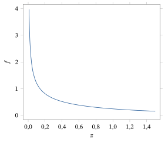
Seja \(Z \sim \chi^2(n)\). Então \(Z \sim \text{Gama}(n/2, 1/2)\). Isto é, \[ f_Z(z) = \frac{1}{2^{n/2}\Gamma(n/2)}\, z^{(n/2)-1} e^{-z/2} \] para \(z > 0\), com \(f_Z(z) = 0\) para \(z < 0\).
Como \(Z \sim \chi^2(n)\), podemos escrever \(Z = X_1^2 + X_2^2 + \cdots + X_n^2\), em que as \(X_i\) são i.i.d. \(N(0, 1)\). Mas isso significa que as \(X_i^2\) são i.i.d. \(\chi^2(1)\). Logo, pelo Teorema 4.6.4, as \(X_i^2\) são i.i.d. \(\text{Gama}(1/2, 1/2)\) para \(i = 1, 2, \ldots, n\). Portanto, \(Z\) é a soma de \(n\) variáveis aleatórias independentes, cada uma com distribuição \(\text{Gama}(1/2, 1/2)\).
Ora, pelo Apêndice C (veja o Problema 3.4.20), a função geradora de momentos de uma variável aleatória \(\text{Gama}(\alpha, \beta)\) é dada por \(m(s) = \beta^\alpha (\beta - s)^{-\alpha}\) para \(s < \beta\). Tomando \(\alpha = 1/2\) e \(\beta = 1/2\) e aplicando o Teorema 3.4.5, a variável \(Y = X_1^2 + X_2^2 + \cdots + X_n^2\) tem função geradora de momentos dada por \[ m_Y(s) = \prod_{i=1}^n m_{X_i^2}(s) = \prod_{i=1}^n \Bigl(\frac{1}{2}\Bigr)^{1/2} \Bigl(\frac{1}{2} - s\Bigr)^{-1/2} = \Bigl(\frac{1}{2}\Bigr)^{n/2} \Bigl(\frac{1}{2} - s\Bigr)^{-n/2} \] para \(s < 1/2\). Reconhecemos aí a função geradora de momentos da distribuição \(\text{Gama}(n/2, 1/2)\). Portanto, pelo Teorema 3.4.6, temos \(X_1^2 + X_2^2\) \({}+ \cdots + X_n^2 \sim \text{Gama}(n/2, 1/2)\), como afirmado.
Esse resultado também pode ser obtido usando o Problema 2.9.15 e indução.
Observe que a densidade \(\chi^2(2)\) é igual à densidade Exponencial\((2)\).61 Na Figura 4.6.2, traçamos os gráficos de várias densidades \(\chi^2\). Observe que as \(\chi^2\) são assimétricas, com cauda longa à direita. À medida que os graus de liberdade aumentam, a massa central de probabilidade se desloca para a direita.
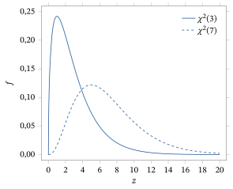
Uma aplicação da distribuição qui-quadrado é a seguinte.
Sejam \(X_1, \ldots, X_n\) i.i.d. \(N(\mu, \sigma^2)\). Tome \[ \bar X = \frac{1}{n}(X_1 + \cdots + X_n) \quad\text{e}\quad S^2 = \frac{1}{n-1} \sum_{i=1}^n (X_i - \bar X)^2. \] Então \((n - 1)S^2/\sigma^2 \sim \chi^2(n - 1)\) e, além disso, \(S^2\) e \(\bar X\) são independentes.
Veja a demonstração deste resultado na Seção 4.7.
Como a distribuição \(\chi^2(n - 1)\) tem média \(n - 1\), obtemos o seguinte.
\(E(S^2) = \sigma^2\).
Os Teoremas 4.6.6 e 4.6.3 implicam que \(E((n - 1)S^2/\sigma^2) = n - 1\) e que \(E(S^2) = \sigma^2\).
O Teorema 4.6.6 será muito usado no Capítulo 6. Por exemplo, esse resultado, junto com o Corolário 4.6.1, nos dá a distribuição amostral conjunta da média amostral \(\bar X\) e da variância amostral \(S^2\) quando amostramos de uma distribuição \(N(\mu, \sigma^2)\). Se não conhecemos \(\mu\), então \(\bar X\) é um estimador natural dessa quantidade e, do mesmo modo, \(S^2\) é um estimador natural de \(\sigma^2\) quando ela é desconhecida. Curiosamente, dividimos por \(n - 1\) em \(S^2\), e não por \(n\), justamente porque queremos que \(E(S^2) = \sigma^2\), como no Corolário 4.6.2. Na verdade, essa propriedade não depende de amostrarmos de uma distribuição normal. Pode-se mostrar que, sempre que \(X_1, \ldots, X_n\) é uma amostra de uma distribuição com variância \(\sigma^2\), temos \(E(S^2) = \sigma^2\).
4.6.2 A Distribuição \(t\)
A distribuição \(t\) também tem muitas aplicações estatísticas.
A distribuição \(t\) com \(n\) graus de liberdade (ou Student\((n)\), ou \(t(n)\)) é a distribuição da variável aleatória \[ Z = \frac{X}{\sqrt{(X_1^2 + X_2^2 + \cdots + X_n^2)/n}}, \] em que \(X, X_1, \ldots, X_n\) são i.i.d., cada uma com a distribuição normal padrão \(N(0, 1)\). (De modo equivalente, \(Z = X/\sqrt{Y/n}\), em que \(Y \sim \chi^2(n)\).)
A maioria dos pacotes estatísticos tem rotinas prontas para calcular probabilidades da \(t(n)\) (veja também a Tabela D.4 do Apêndice D).
A densidade da distribuição \(t(n)\) é dada pelo resultado a seguir.
Seja \(U \sim t(n)\). Então \[ f_U(u) = \frac{\Gamma\bigl(\frac{n+1}{2}\bigr)}{\sqrt{\pi}\, \Gamma\bigl(\frac{n}{2}\bigr)} \Bigl(1 + \frac{u^2}{n}\Bigr)^{-(n+1)/2} \frac{1}{\sqrt{n}} \] para todo \(u \in R^1\).
Para a demonstração deste resultado, veja a Seção 4.7.
O resultado a seguir mostra que, quando \(n\) é grande, a distribuição \(t(n)\) é muito parecida com a distribuição \(N(0, 1)\).
Quando \(n \to \infty\), a distribuição \(t(n)\) converge em distribuição para uma distribuição normal padrão.
Sejam \(Z_1, \ldots, Z_n, Z\) i.i.d. \(N(0, 1)\). Quando \(n \to \infty\), pela lei forte dos grandes números, \((Z_1^2 + \cdots + Z_n^2)/n\) converge com probabilidade 1 para a constante 1. Portanto, a distribuição de \begin{equation} \frac{Z}{\sqrt{\bigl(Z_1^2 + \cdots + Z_n^2\bigr)/n}} \tag{4.6.2} \end{equation} converge para a distribuição de \(Z\), que é a distribuição normal padrão. Pela Definição 4.6.2, (4.6.2) tem distribuição \(t(n)\).
Na Figura 4.6.3, traçamos os gráficos de várias densidades \(t\). Observe que as densidades das distribuições \(t\) são simétricas em torno de 0 e parecidas com a densidade normal padrão.
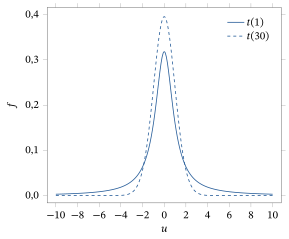
A distribuição \(t(n)\) tem caudas mais longas que a distribuição \(N(0, 1)\). Por exemplo, a distribuição \(t(1)\) (também conhecida como distribuição de Cauchy62) tem \(0{,}9366\) de sua probabilidade no intervalo \((-10, 10)\), ao passo que a distribuição \(N(0, 1)\) tem ali toda a sua probabilidade (pelo menos até a quarta casa decimal). As densidades \(t(30)\) e \(N(0, 1)\) são muito parecidas.
4.6.3 A Distribuição \(F\)
Por fim, consideramos a distribuição \(F\).
A distribuição \(F\) com \(m\) e \(n\) graus de liberdade (ou \(F(m, n)\)) é a distribuição da variável aleatória \[ Z = \frac{(X_1^2 + X_2^2 + \cdots + X_m^2)/m}{(Y_1^2 + Y_2^2 + \cdots + Y_n^2)/n}, \] em que \(X_1, \ldots, X_m, Y_1, \ldots, Y_n\) são i.i.d., cada uma com a distribuição normal padrão. (De modo equivalente, \(Z = (X/m)/(Y/n)\), em que \(X \sim \chi^2(m)\) e \(Y \sim \chi^2(n)\).)
A maioria dos pacotes estatísticos tem rotinas prontas para calcular probabilidades da \(F(m, n)\) (veja também a Tabela D.5 do Apêndice D).
A densidade da distribuição \(F(m, n)\) é dada pelo resultado a seguir.
Seja \(U \sim F(m, n)\). Então \[ f_U(u) = \frac{\Gamma\bigl(\frac{m+n}{2}\bigr)}{\Gamma\bigl(\frac{m}{2}\bigr) \Gamma\bigl(\frac{n}{2}\bigr)} \Bigl(\frac{m}{n} u\Bigr)^{(m/2)-1} \Bigl(1 + \frac{m}{n} u\Bigr)^{-(m+n)/2} \frac{m}{n} \] para \(u > 0\), com \(f_U(u) = 0\) para \(u < 0\).
Para a demonstração deste resultado, veja a Seção 4.7.
Na Figura 4.6.4, traçamos os gráficos de várias densidades \(F(m, n)\). Observe que essas densidades são assimétricas, com cauda longa à direita.
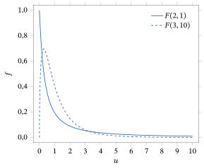
Os resultados a seguir são úteis quando é preciso fazer contas com a distribuição \(F(m, n)\).
Se \(Z \sim F(m, n)\), então \(1/Z \sim F(n, m)\).
Usando a Definição 4.6.3, temos \[ \frac{1}{Z} = \frac{(Y_1^2 + Y_2^2 + \cdots + Y_n^2)/n}{(X_1^2 + X_2^2 + \cdots + X_m^2)/m}, \] e o resultado é imediato pela definição.
Portanto, se \(Z \sim F(m, n)\), então \(P(Z \le z) = P(1/Z \ge 1/z)\) \({}= 1 - P(1/Z \le 1/z)\), e \(P(1/Z \le 1/z)\) é a fda da distribuição \(F(n, m)\) calculada em \(1/z\).
Em muitas aplicações estatísticas, \(n\) pode ser muito grande. O resultado a seguir dá, então, uma aproximação útil para esse caso.
Se \(Z_n \sim F(m, n)\), então \(mZ_n\) converge em distribuição para uma distribuição \(\chi^2(m)\) quando \(n \to \infty\).
Usando a Definição 4.6.3, temos \[ mZ = \frac{X_1^2 + X_2^2 + \cdots + X_m^2}{(Y_1^2 + Y_2^2 + \cdots + Y_n^2)/n}. \] Pela Definição 4.6.1, \(X_1^2 + \cdots + X_m^2 \sim \chi^2(m)\). Pelo Teorema 4.6.3, \(E(Y_i^2) = 1\), de modo que a lei forte dos grandes números implica que \((Y_1^2 + Y_2^2 + \cdots + Y_n^2)/n\) converge quase certamente para 1. Isso estabelece o resultado.
Por fim, as Definições 4.6.2 e 4.6.3 dão imediatamente o resultado a seguir.
Se \(Z \sim t(n)\), então \(Z^2 \sim F(1, n)\).
Resumo da Seção 4.6
- Combinações lineares de variáveis aleatórias normais independentes também são normais, com média e variância apropriadas.
- Duas combinações lineares da mesma coleção de variáveis aleatórias normais independentes são independentes se e somente se sua covariância é igual a 0.
- A distribuição qui-quadrado com \(n\) graus de liberdade é a distribuição correspondente a uma soma de quadrados de \(n\) variáveis aleatórias normais padrão i.i.d. Ela tem média \(n\) e é igual à distribuição \(\text{Gama}(n/2, 1/2)\).
- A distribuição \(t\) com \(n\) graus de liberdade é a distribuição correspondente a uma variável aleatória normal padrão dividida pela raiz quadrada de \(1/n\) vezes uma variável aleatória qui-quadrado independente com \(n\) graus de liberdade. Sua função densidade foi apresentada. Quando \(n \to \infty\), ela converge em distribuição para uma distribuição normal padrão.
- A distribuição \(F\) com \(m\) e \(n\) graus de liberdade é a distribuição correspondente a \(m/n\) vezes uma distribuição qui-quadrado com \(m\) graus de liberdade, dividida por uma distribuição qui-quadrado independente com \(n\) graus de liberdade. Sua função densidade foi apresentada. Se \(t\) tem distribuição \(t(n)\), então \(t^2\) tem distribuição \(F(1, n)\).
Exercícios
4.6.1 Sejam \(X_1 \sim N(3, 2^2)\) e \(X_2 \sim N(-8, 5^2)\) independentes. Sejam \(U = X_1 - 5X_2\) e \(V = -6X_1 + CX_2\), em que \(C\) é uma constante. (a) Quais são as distribuições de \(U\) e \(V\)?(b) Que valor de \(C\) torna \(U\) e \(V\) independentes?
4.6.2 Sejam \(X \sim N(3, 5)\) e \(Y \sim N(-7, 2)\) independentes. (a) Qual é a distribuição de \(Z = 4X - Y/3\)?(b) Qual é a covariância de \(X\) e \(Z\)?
4.6.3 Sejam \(X \sim N(3, 5)\) e \(Y \sim N(-7, 2)\) independentes. Encontre valores de \(C_1 \ne 0\), \(C_2\), \(C_3 \ne 0\), \(C_4\), \(C_5\) tais que \(C_1(X + C_2)^2\) \({}+ C_3(Y + C_4)^2 \sim \chi^2(C_5)\).
4.6.4 Sejam \(X \sim \chi^2(n)\) e \(Y \sim N(0, 1)\) independentes. Prove que \(X + Y^2 \sim \chi^2(n + 1)\).
4.6.5 Sejam \(X \sim \chi^2(n)\) e \(Y \sim \chi^2(m)\) independentes. Prove que \(X + Y \sim \chi^2(n + m)\).
4.6.6 Sejam \(X_1, X_2, \ldots, X_{4n}\) i.i.d. com distribuição \(N(0, 1)\). Encontre um valor de \(C\) tal que \[ C\, \frac{X_1^2 + X_2^2 + \cdots + X_n^2}{X_{n+1}^2 + X_{n+2}^2 + \cdots + X_{4n}^2} \sim F(n, 3n). \]
4.6.7 Sejam \(X_1, X_2, \ldots, X_{n+1}\) i.i.d. com distribuição \(N(0, 1)\). Encontre um valor de \(C\) tal que \[ C\, \frac{X_1}{\sqrt{X_2^2 + \cdots + X_n^2 + X_{n+1}^2}} \sim t(n). \]
4.6.8 Sejam \(X \sim N(3, 5)\) e \(Y \sim N(-7, 2)\) independentes. Encontre valores de \(C_1\), \(C_2\), \(C_3\), \(C_4\), \(C_5\), \(C_6\) tais que \[ \frac{C_1(X + C_2)^{C_3}}{((Y + C_4)^2)^{C_5}} \sim t(C_6). \]
4.6.9 Sejam \(X \sim N(3, 5)\) e \(Y \sim N(-7, 2)\) independentes. Encontre valores de \(C_1\), \(C_2\), \(C_3\), \(C_4\), \(C_5\), \(C_6\), \(C_7\) tais que \[ \frac{C_1(X + C_2)^{C_3}}{(Y + C_4)^{C_5}} \sim F(C_6, C_7). \]
4.6.10 Sejam \(X_1, X_2, \ldots, X_{100}\) independentes, cada uma com a distribuição normal padrão. (a) Calcule a distribuição de \(X_1^2\).(b) Calcule a distribuição de \(X_3^2 + X_5^2\).(c) Calcule a distribuição de \(X_{10}\big/\sqrt{[X_{20}^2 + X_{30}^2 + X_{40}^2]/3}\).(d) Calcule a distribuição de \(3X_{10}^2 \big/ [X_{20}^2\) \({}+ X_{30}^2 + X_{40}^2]\).(e) Calcule a distribuição de \[ \frac{30}{70}\, \frac{X_1^2 + X_2^2 + \cdots + X_{70}^2}{X_{71}^2 + X_{72}^2 + \cdots + X_{100}^2}. \]
4.6.11 Sejam \(X_1, X_2, \ldots, X_{61}\) independentes, cada uma com distribuição \(N(\mu, \sigma^2)\). Tome \(\bar X = (1/61)(X_1 + X_2 + \cdots + X_{61})\) e \[ S^2 = \frac{1}{60}\Bigl[(X_1 - \bar X)^2 + (X_2 - \bar X)^2 + \cdots + (X_{61} - \bar X)^2\Bigr] \] como de costume. (a) Para que valores de \(K\) e \(m\) a quantidade \(Y \equiv K(\bar X - \mu)/\sqrt{S^2}\) tem distribuição \(t\) com \(m\) graus de liberdade?(b) Com \(K\) como no item (a), encontre \(y\) tal que \(P(Y \ge y) = 0{,}05\).(c) Para que valores de \(a\), \(b\) e \(c\) a quantidade \(W \equiv a(\bar X - \mu)^2/S^2\) tem distribuição \(F\) com \(b\) e \(c\) graus de liberdade?(d) Para esses valores de \(a\), \(b\) e \(c\), encontre uma quantidade \(w\) tal que \(P(W \ge w) = 0{,}05\).
4.6.12 Suponha que a temperatura interna (em graus Celsius, sob uso intenso) do mais recente computador de mesa da Dell tenha distribuição normal com média 40 e desvio padrão 5, enquanto a do mais recente Compaq tem distribuição normal com média 45 e desvio padrão 8. Suponha que medimos a temperatura do Dell 20 vezes (em dias diferentes) e obtemos as medidas \(D_1, D_2, \ldots, D_{20}\), e que medimos também a temperatura do Compaq 30 vezes e obtemos as medidas \(C_1, C_2, \ldots, C_{30}\). (a) Calcule a distribuição de \(\bar D \equiv (D_1 + \cdots + D_{20})/20\).(b) Calcule a distribuição de \(\bar C \equiv (C_1 + \cdots + C_{30})/30\).(c) Calcule a distribuição de \(Z \equiv \bar C - \bar D\).(d) Calcule \(P(\bar C < \bar D)\).(e) Seja \(U = (D_1 - \bar D)^2\) \({}+ (D_2 - \bar D)^2\) \({}+ \cdots + (D_{20} - \bar D)^2\). Quanto vale \(P(U > 633{,}25)\)?
Problemas
4.6.13 Seja \(X \sim N(0, 1)\) e seja \(P(Y = 1) = P(Y = -1) = 1/2\). Suponha que \(X\) e \(Y\) sejam independentes. Seja \(Z = XY\). (a) Prove que \(Z \sim N(0, 1)\).(b) Prove que \(\Cov(X, Z) = 0\).(c) Prove diretamente que \(X\) e \(Z\) não são independentes.(d) Por que isso não contradiz o Teorema 4.6.2?
4.6.14 Seja \(Z \sim t(n)\). Prove que \(P(Z < -x) = P(Z > x)\) para \(x \in R^1\), isto é, prove que a distribuição \(t(n)\) é simétrica em torno de 0.
4.6.15 Seja \(X_n \sim F(n, 2n)\) para \(n = 1, 2, 3, \ldots\). Prove que \(X_n \to 1\) em probabilidade e com probabilidade 1.
4.6.16 (A distribuição qui-quadrado geral) Prove que, para \(\alpha > 0\), a função \[ f(z) = \frac{1}{2^{\alpha/2}\Gamma(\alpha/2)}\, z^{(\alpha/2)-1} e^{-z/2} \] define uma distribuição de probabilidade em \((0, \infty)\). Essa distribuição é conhecida como distribuição \(\chi^2(\alpha)\), isto é, ela generaliza a distribuição da Seção 4.6.264 ao permitir que o número de graus de liberdade seja um número real positivo qualquer. (Sugestão: a distribuição \(\chi^2(\alpha)\) é igual a uma distribuição \(\text{Gama}(\alpha/2, 1/2)\).)
4.6.17 (MV) (A distribuição \(t\) geral) Prove que, para \(\alpha > 0\), a função \[ f(u) = \frac{\Gamma\bigl(\frac{\alpha+1}{2}\bigr)}{\sqrt{\pi}\, \Gamma\bigl(\frac{\alpha}{2}\bigr)} \Bigl(1 + \frac{u^2}{\alpha}\Bigr)^{-(\alpha+1)/2} \frac{1}{\sqrt{\alpha}} \] define uma distribuição de probabilidade em \((-\infty, \infty)\), mostrando que a variável aleatória \[ U = \frac{X}{\sqrt{Y/\alpha}} \] tem essa densidade quando \(X \sim N(0, 1)\) é independente de \(Y \sim \chi^2(\alpha)\), como no Problema 4.6.16. Essa distribuição é conhecida como distribuição \(t(\alpha)\), isto é, ela generaliza a distribuição da Seção 4.6.365 ao permitir que o número de graus de liberdade seja um número real positivo qualquer. (Sugestão: a demonstração é praticamente idêntica à do Teorema 4.6.7.)
4.6.18 (MV) (A distribuição \(F\) geral) Prove que, para \(\alpha > 0\), \(\beta > 0\), a função \[ f(u) = \frac{\Gamma\bigl(\frac{\alpha+\beta}{2}\bigr)}{\Gamma\bigl(\frac{\alpha}{2}\bigr) \Gamma\bigl(\frac{\beta}{2}\bigr)} \Bigl(\frac{\alpha}{\beta} u\Bigr)^{(\alpha/2)-1} \Bigl(1 + \frac{\alpha}{\beta} u\Bigr)^{-(\alpha+\beta)/2} \frac{\alpha}{\beta} \] define uma distribuição de probabilidade em \((0, \infty)\), mostrando que a variável aleatória \[ U = \frac{X/\alpha}{Y/\beta} \] tem essa densidade sempre que \(X \sim \chi^2(\alpha)\) é independente de \(Y \sim \chi^2(\beta)\), como no Problema 4.6.16. Essa distribuição é conhecida como distribuição \(F(\alpha, \beta)\), isto é, ela generaliza a distribuição da Seção 4.6.466 ao permitir que os graus de liberdade do numerador e do denominador sejam números reais positivos quaisquer. (Sugestão: a demonstração é praticamente idêntica à do Teorema 4.6.9.)
4.6.19 Prove que, quando \(X \sim t(\alpha)\), como definida no Problema 4.6.17, e \(\alpha > 1\), então \(E(X) = 0\). Prove ainda que, quando \(\alpha > 2\), \(\Var(X) = \alpha/(\alpha - 2)\). Você pode supor que essas integrais existem — veja o Desafio 4.6.21. (Sugestão: para calcular o segundo momento, use \(Y = X^2 \sim F(1, \alpha)\), como definida no Problema 4.6.18.)
4.6.20 Prove que, quando \(X \sim F(\alpha, \beta)\), então \(E(X) = \beta/(\beta - 2)\) quando \(\beta > 2\) e \(\Var(X) = 2\beta^2(\alpha + \beta - 2)/\alpha(\beta - 2)^2(\beta - 4)\) quando \(\beta > 4\).
Desafios
4.6.21 Seguindo o Problema 4.6.19, prove que a média de \(X\) não existe sempre que \(0 < \alpha \le 1\). Prove ainda que a variância de \(X\) não existe sempre que \(0 < \alpha \le 1\) e é infinita quando \(1 < \alpha \le 2\).
4.6.22 Prove a identidade (4.7.1) da Seção 4.7, que aparece como parte da demonstração do Teorema 4.6.6.
4.7 Demonstrações Adicionais (Avançado)
Queremos provar o seguinte resultado. Sejam \(Z, Z_1, Z_2, \ldots\) variáveis aleatórias. Suponha que \(Z_n \to Z\) com probabilidade 1. Então \(Z_n \to Z\) em probabilidade. Isto é, se uma sequência de variáveis aleatórias converge quase certamente, então ela converge em probabilidade para o mesmo limite.
Suponha que \(P(Z_n \to Z) = 1\). Fixe \(\epsilon > 0\) e seja \(A_n = \{s : \lvert Z_m - Z\rvert \ge \epsilon \text{ para algum } m \ge n\}\). Então \(\{A_n\}\) é uma sequência decrescente67 de eventos. Além disso, se \(s \in \bigcap_{n=1}^{\infty} A_n\), então \(Z_n(s) \nrightarrow Z(s)\) quando \(n \to \infty\). Logo, \[ P\left(\bigcap_{n=1}^{\infty} A_n\right) \le P(Z_n \nrightarrow Z) = 0. \] Pela continuidade das probabilidades, temos \(\lim_{n \to \infty} P(A_n)\) \({}= P\bigl(\bigcap_{n=1}^{\infty} A_n\bigr)\) \({}= 0\). Logo, \(P(\lvert Z_n - Z\rvert \ge \epsilon) \le P(A_n) \to 0\) quando \(n \to \infty\). Como isso vale para qualquer \(\epsilon > 0\), vemos que \(Z_n \to Z\) em probabilidade.
Mostramos que, se \(X_n \xrightarrow{P} X\), então \(X_n \xrightarrow{D} X\).
Suponha que \(X_n \to X\) em probabilidade e que \(P(X = x) = 0\). Queremos mostrar que \(\lim_{n \to \infty} P(X_n \le x)\) \({}= P(X \le x)\).
Escolha qualquer \(\epsilon > 0\). Ora, se \(X_n \le x\), então devemos ter \(X \le x + \epsilon\) ou \(\lvert X - X_n\rvert \ge \epsilon\). Logo, pela subaditividade68, \[ P(X_n \le x) \le P(X \le x + \epsilon) + P(\lvert X - X_n\rvert \ge \epsilon). \] Substituindo \(x\) por \(x - \epsilon\) nessa equação, vemos também que \[ P(X \le x - \epsilon) \le P(X_n \le x) + P(\lvert X - X_n\rvert \ge \epsilon). \] Reorganizando e combinando essas duas desigualdades, temos \[ P(X \le x - \epsilon) - P(\lvert X - X_n\rvert \ge \epsilon) \le P(X_n \le x) \le P(X \le x + \epsilon) + P(\lvert X - X_n\rvert \ge \epsilon). \] Essa é a chave.
Em seguida, fazemos \(n \to \infty\). Como \(X_n \to X\) em probabilidade, sabemos que \[ \lim_{n \to \infty} P(\lvert X - X_n\rvert \ge \epsilon) = 0. \] Isso significa que \(\lim_{n \to \infty} P(X_n \le x)\) fica “espremido” entre \(P(X \le x - \epsilon)\) e \(P(X \le x + \epsilon)\).
Fazemos então \(\epsilon \searrow 0\). Pela continuidade das probabilidades, \[ \lim_{\epsilon \searrow 0} P(X \le x + \epsilon) = P(X \le x) \quad\text{e}\quad \lim_{\epsilon \searrow 0} P(X \le x - \epsilon) = P(X < x). \] Isso significa que \(\lim_{n \to \infty} P(X_n \le x)\) fica “espremido” entre \(P(X < x)\) e \(P(X \le x)\).
Mas, como \(P(X = x) = 0\), devemos ter \(P(X < x) = P(X \le x)\). Logo, \(\lim_{n \to \infty} P(X_n \le x)\) \({}= P(X \le x)\), como queríamos.
Precisamos provar o seguinte. Sejam \(X_1, X_2, \ldots\) i.i.d. com média finita \(\mu\) e variância finita \(\sigma^2\). Seja \(Z \sim N(0, 1)\). Defina \(S_n = X_1 + \cdots + X_n\) e \[ Z_n = \frac{S_n - n\mu}{\sqrt{n\sigma^2}}. \] Então, quando \(n \to \infty\), a sequência \(\{Z_n\}\) converge em distribuição para a \(Z\), isto é, \(Z_n \xrightarrow{D} Z\).
Lembre que a distribuição normal padrão tem função geradora de momentos dada por \(m_Z(s) = \exp\bigl(s^2/2\bigr)\).
Vamos agora supor que \(m_{Z_n}(s)\) é finita para \(\lvert s\rvert < s_0\), para algum \(s_0 > 0\). (Essa suposição pode ser eliminada usando funções características em vez de funções geradoras de momentos.) Supondo isso, vamos provar que, para cada número real \(s\), temos \(\lim_{n \to \infty} m_{Z_n}(s) = m_Z(s)\), em que \(m_{Z_n}(s)\) é a função geradora de momentos de \(Z_n\). Segue então do Teorema 4.4.2 que \(Z_n\) converge para \(Z\) em distribuição.
Para prosseguir, seja \(Y_i = (X_i - \mu)/\sigma\). Então \(E(Y_i) = 0\) e \(E(Y_i^2) = \Var(Y_i) = 1\). Além disso, temos \[ Z_n = \frac{1}{\sqrt{n}}(Y_1 + \cdots + Y_n). \] Seja \(m_Y(s) = E(e^{sY_i})\) a função geradora de momentos de \(Y_i\) (que é a mesma para todo \(i\), já que elas são i.i.d.). Então, usando a independência, calculamos que \begin{align*} \lim_{n \to \infty} m_{Z_n}(s) &= \lim_{n \to \infty} E\left(e^{sZ_n}\right) = \lim_{n \to \infty} E\left(e^{s(Y_1 + \cdots + Y_n)/\sqrt{n}}\right)\\ &= \lim_{n \to \infty} E\left(e^{sY_1/\sqrt{n}}\, e^{sY_2/\sqrt{n}} \cdots e^{sY_n/\sqrt{n}}\right)\\ &= \lim_{n \to \infty} E\left(e^{sY_1/\sqrt{n}}\right) E\left(e^{sY_2/\sqrt{n}}\right) \cdots E\left(e^{sY_n/\sqrt{n}}\right)\\ &= \lim_{n \to \infty} m_Y(s/\sqrt{n})\, m_Y(s/\sqrt{n}) \cdots m_Y(s/\sqrt{n})\\ &= \lim_{n \to \infty} m_Y(s/\sqrt{n})^n. \end{align*}
Ora, sabemos do Teorema 3.5.3 que \(m_Y(0) = E(e^0) = 1\).69 Além disso, \(m_Y'(0) = E(Y_i) = 0\) e \(m_Y''(0) = E(Y_i^2) = 1\). Mas então, expandindo \(m_Y(s)\) em série de Taylor70 em torno de \(s = 0\), vemos que \[ m_Y(s) = 1 + 0s + \frac{1}{2!}s^2 + o(s^2) = 1 + s^2/2 + o(s^2), \] em que \(o(s^2)\) representa uma quantidade que, quando \(s \to 0\), vai a 0 mais depressa do que \(s^2\) — isto é, \(o(s^2)/s \to 0\) quando \(s \to 0\).71 Isso significa que \[ m_Y(s/\sqrt{n}) = 1 + (s/\sqrt{n})^2/2 + o\bigl((s/\sqrt{n})^2\bigr) = 1 + s^2/2n + o(1/n), \] em que agora \(o(1/n)\) representa uma quantidade que, quando \(n \to \infty\), vai a 0 mais depressa do que \(1/n\).
Por fim, lembramos do cálculo que, para qualquer número real \(c\), \(\lim_{n \to \infty} (1 + c/n)^n = e^c\). Segue disso e do que foi visto acima que72 \[ \lim_{n \to \infty} \bigl(m_Y(s/2\sqrt{n})\bigr)^n = \lim_{n \to \infty} (1 + s^2/2n)^n = e^{s^2/2}. \] Isto é, \(\lim_{n \to \infty} m_{Z_n}(s) = e^{s^2/2}\), como afirmado.
Provamos o seguinte. Suponha que \(X_i \sim N(\mu_i, \sigma_i^2)\) para \(i = 1, 2, \ldots, n\) e também que as \(\{X_i\}\) são independentes. Sejam \(U = \sum_{i=1}^{n} a_i X_i\) e \(V = \sum_{i=1}^{n} b_i X_i\), para constantes \(\{a_i\}\) e \(\{b_i\}\) quaisquer. Então \(\Cov(U, V) = \sum_i a_i b_i \sigma_i^2\). Além disso, \(\Cov(U, V) = 0\) se e somente se \(U\) e \(V\) são independentes.
Foi provado na Seção 4.6 que \(\Cov(U, V) = \sum_i a_i b_i \sigma_i^2\) e que \(\Cov(U, V) = 0\) se \(U\) e \(V\) são independentes. Resta provar que, se \(\Cov(U, V) = 0\), então \(U\) e \(V\) são independentes. Por simplicidade, tomamos \(n = 2\), \(\mu_1 = \mu_2 = 0\) e \(\sigma_1^2 = \sigma_2^2 = 1\); o caso geral é parecido, mas mais trabalhoso. Temos, portanto, \[ U = a_1 X_1 + a_2 X_2 \quad\text{e}\quad V = b_1 X_1 + b_2 X_2. \] O jacobiano73 dessa transformação é \[ J(x_1, x_2) = \frac{\partial U}{\partial X_1}\frac{\partial V}{\partial X_2} - \frac{\partial V}{\partial X_1}\frac{\partial U}{\partial X_2} = a_1 b_2 - b_1 a_2. \] Invertendo a transformação, obtemos \[ X_1 = \frac{b_2 U - a_2 V}{a_1 b_2 - b_1 a_2} \quad\text{e}\quad X_2 = \frac{a_1 V - b_1 U}{a_1 b_2 - b_1 a_2}. \] Além disso, \[ f_{X_1, X_2}(x_1, x_2) = \frac{1}{2\pi} e^{-\left(x_1^2 + x_2^2\right)/2}. \] Logo, pelo teorema da mudança de variável multidimensional (Teorema 2.9.2), temos \begin{align*} f_{U, V}(u, v) &= f_{X_1, X_2}(x_1, x_2) \left(\frac{b_2 u - a_2 v}{a_1 b_2 - b_1 a_2},\ \frac{a_1 v - b_1 u}{a_1 b_2 - b_1 a_2}\right) \lvert J(x_1, x_2)\rvert^{-1}\\ &= \frac{1}{2\pi}\, \frac{\exp\{-((b_2 u - a_2 v)^2 + (a_1 v - b_1 u)^2)\,/\,2(a_1 b_2 - b_1 a_2)^2\}} {\lvert a_1 b_2 - b_1 a_2\rvert}. \end{align*} Mas \[ (b_2 u - a_2 v)^2 + (a_1 v - b_1 u)^2 = (b_1^2 + b_2^2)u^2 + (a_1^2 + a_2^2)v^2 - 2(a_1 b_1 + a_2 b_2)uv \] e \(\Cov(U, V) = a_1 b_1 + a_2 b_2\). Logo, se \(\Cov(U, V) = 0\), então \[ (b_2 u - a_2 v)^2 + (a_1 v - b_1 u)^2 = (b_1^2 + b_2^2)u^2 + (a_1^2 + a_2^2)v^2 \] e \begin{align*} f_{U, V}(u, v) &= \frac{\exp\{-((b_1^2 + b_2^2)u^2 + (a_1^2 + a_2^2)v^2)/2(a_1 b_2 - b_1 a_2)^2\}} {2\pi\,\lvert a_1 b_2 - b_1 a_2\rvert}\\ &= \frac{\exp\{-(b_1^2 + b_2^2)u^2/2(a_1 b_2 - b_1 a_2)^2\} \exp\{-(a_1^2 + a_2^2)v^2/2(a_1 b_2 - b_1 a_2)^2\}} {2\pi\,\lvert a_1 b_2 - b_1 a_2\rvert}. \end{align*} Segue que podemos fatorar \(f_{U, V}(u, v)\) como uma função de \(u\) vezes uma função de \(v\). Mas isso implica (ver Problema 2.8.19) que \(U\) e \(V\) são independentes.
Queremos provar que, quando \(X_1, \ldots, X_n\) são i.i.d. \(N(\mu, \sigma^2)\) e \[ \bar{X} = \frac{1}{n}(X_1 + \cdots + X_n) \quad\text{e}\quad S^2 = \frac{1}{n - 1}\sum_{i=1}^{n} (X_i - \bar{X})^2, \] então \((n - 1)\,S^2/\sigma^2 \sim \chi^2(n - 1)\) e, além disso, \(S^2\) e \(\bar{X}\) são independentes.
Temos \[ \frac{n - 1}{\sigma^2} S^2 = \sum_{i=1}^{n} \left(\frac{X_i - \bar{X}}{\sigma}\right)^2. \] Reescrevemos essa expressão como (ver Desafio 4.6.22) \begin{multline} \frac{n - 1}{\sigma^2} S^2 = \left(\frac{X_1 - X_2}{\sigma\sqrt{2}}\right)^2 + \left(\frac{X_1 + X_2 - 2X_3}{\sigma\sqrt{2 \cdot 3}}\right)^2 + \left(\frac{X_1 + X_2 + X_3 - 3X_4}{\sigma\sqrt{3 \cdot 4}}\right)^2\\ + \cdots + \left(\frac{X_1 + X_2 + \cdots + X_{n-1} - (n - 1)X_n}{\sigma\sqrt{(n - 1)n}}\right)^2. \tag{4.7.1} \end{multline}
Ora, pelo Teorema 4.6.1, cada uma das \(n - 1\) expressões entre parênteses em (4.7.1) tem distribuição normal padrão. Além disso, pelo Teorema 4.6.2, as expressões entre parênteses em (4.7.1) são todas independentes umas das outras e também são todas independentes de \(\bar{X}\).
Segue que \((n - 1)\,S^2/\sigma^2\) é independente de \(\bar{X}\). Segue também, pela definição da distribuição qui-quadrado, que \((n - 1)\,S^2/\sigma^2 \sim \chi^2(n - 1)\).
Queremos mostrar que, quando \(U \sim t(n)\), então \[ f_U(u) = \frac{\Gamma\left(\frac{n+1}{2}\right)}{\sqrt{\pi}\,\Gamma\left(\frac{n}{2}\right)} \left(1 + \frac{u^2}{n}\right)^{-(n+1)/2} \frac{1}{\sqrt{n}} \] para todo \(u \in R^1\).
Como \(U \sim t(n)\), podemos escrever \(U = X/\sqrt{Y/n}\), em que \(X\) e \(Y\) são independentes, com \(X \sim N(0, 1)\) e \(Y \sim \chi^2(n)\). Segue que \(X\) e \(Y\) têm densidade conjunta dada por \[ f_{X, Y}(x, y) = \frac{e^{-x^2/2}\, y^{(n/2)-1} e^{-y/2}} {\sqrt{2\pi}\, 2^{n/2}\, \Gamma\left(\frac{n}{2}\right)} \] quando \(y > 0\) (com \(f_{X, Y}(x, y) = 0\) para \(y < 0\)).
Seja \(V = Y\). Vamos usar a fórmula de mudança de variável multivariada (Teorema 2.9.2) para calcular a densidade conjunta \(f_{U, V}(u, v)\) de \(U\) e \(V\). Como \(U = X/\sqrt{Y/n}\) e \(V = Y\), segue que \(X = U\sqrt{V/n}\) e \(Y = V\). Calculamos o termo jacobiano como74 \[ J(x, y) = \det\begin{pmatrix} \frac{\partial u}{\partial x} & \frac{\partial v}{\partial x}\\[2ex] \frac{\partial u}{\partial y} & \frac{\partial v}{\partial y} \end{pmatrix} = \det\begin{pmatrix} \frac{1}{\sqrt{y/n}} & 0\\[2ex] \frac{-x\sqrt{n}}{y^{3/2}} & 1 \end{pmatrix} = \frac{1}{\sqrt{y/n}}. \] Logo, \begin{align*} f_{U, V}(u, v) &= f_{X, Y}\left(u\sqrt{\frac{v}{n}},\, v\right) J^{-1}\left(u\sqrt{\frac{v}{n}},\, v\right)\\ &= \frac{e^{-\left(u^2 v\right)/2n}\, v^{(n/2)-1} e^{-v/2}} {\sqrt{2\pi}\, 2^{n/2}\, \Gamma\left(\frac{n}{2}\right)} \sqrt{\frac{v}{n}}\\ &= \frac{1}{\sqrt{\pi}\,\Gamma(n/2)}\,\frac{1}{2^{(n+1)/2}}\,\frac{1}{\sqrt{n}}\, v^{(n+1)/2-1} e^{-(v/2)\left(1 + u^2/n\right)} \end{align*} para \(v > 0\) (com \(f_{U, V}(u, v) = 0\) para \(v < 0\)).
Por fim, calculamos a densidade marginal75 de \(U\): \begin{align*} f_U(u) &= \int_{-\infty}^{\infty} f_{U, V}(u, v)\, dv\\ &= \frac{1}{\sqrt{\pi}\,\Gamma(n/2)}\,\frac{1}{2^{(n+1)/2}}\,\frac{1}{\sqrt{n}} \int_0^{\infty} v^{(n+1)/2-1} e^{-(v/2)\left(1 + u^2/n\right)}\, dv\\ &= \frac{1}{\sqrt{\pi}\,\Gamma(n/2)} \left(1 + \frac{u^2}{n}\right)^{-(n+1)/2} \frac{1}{\sqrt{n}} \int_0^{\infty} w^{(n+1)/2-1} e^{-w/2}\, dw\\ &= \frac{\Gamma\left(\frac{n+1}{2}\right)}{\sqrt{\pi}\,\Gamma(n/2)} \left(1 + \frac{u^2}{n}\right)^{-(n+1)/2} \frac{1}{\sqrt{n}}, \end{align*} em que fizemos a substituição \(w = \left(1 + u^2/n\right)v/2\) para obter a terceira igualdade e depois usamos a definição da função gama76 para obter o resultado.77
Queremos mostrar que, quando \(U \sim F(m, n)\), então \[ f_U(u) = \frac{\Gamma\left(\frac{m+n}{2}\right)} {\Gamma\left(\frac{m}{2}\right)\Gamma\left(\frac{n}{2}\right)} \left(\frac{m}{n}u\right)^{(m/2)-1} \left(1 + \frac{m}{n}u\right)^{-(m+n)/2} \frac{m}{n} \] para \(u > 0\), com \(f_U(u) = 0\) para \(u < 0\).
Como \(U \sim F(n, m)\), podemos escrever \(U = (X/m)/(Y/n)\), em que \(X\) e \(Y\) são independentes, com \(X \sim \chi^2(m)\) e \(Y \sim \chi^2(n)\).78 Segue que \(X\) e \(Y\) têm densidade conjunta dada por \[ f_{X, Y}(x, y) = \frac{x^{(m/2)-1} e^{-x/2}\, y^{(n/2)-1} e^{-y/2}} {2^{m/2}\,\Gamma\left(\frac{m}{2}\right) 2^{n/2}\,\Gamma\left(\frac{n}{2}\right)} \] quando \(x, y > 0\) (com \(f_{X, Y}(x, y) = 0\) para \(x < 0\) ou \(y < 0\)).
Seja \(V = Y\), e usemos a fórmula de mudança de variável multivariada (Teorema 2.9.2) para calcular a densidade conjunta \(f_{U, V}(u, v)\) de \(U\) e \(V\). Como \(U = (X/m)/(Y/n)\) e \(V = Y\), segue que \(X = (m/n)UV\) e \(Y = V\). Calculamos o termo jacobiano como \[ J(x, y) = \det\begin{pmatrix} \frac{\partial u}{\partial x} & \frac{\partial v}{\partial x}\\[2ex] \frac{\partial u}{\partial y} & \frac{\partial v}{\partial y} \end{pmatrix} = \det\begin{pmatrix} \frac{n}{my} & 0\\[2ex] \frac{-nX}{mY^2} & 1 \end{pmatrix} = \frac{n}{my}. \] Logo, \begin{align*} f_{U, V}(u, v) &= f_{X, Y}\bigl((m/n)uv,\, v\bigr) J^{-1}\bigl((m/n)uv,\, v\bigr)\\ &= \frac{\left(\frac{m}{n}uv\right)^{(m/2)-1} e^{-(m/n)(uv/2)}\, v^{(n/2)-1} e^{-(v/2)}} {2^{m/2}\,\Gamma\left(\frac{m}{2}\right) 2^{n/2}\,\Gamma\left(\frac{n}{2}\right)} \frac{m}{n} v\\ &= \frac{1}{\Gamma\left(\frac{m}{2}\right)\Gamma\left(\frac{n}{2}\right)} \left(\frac{m}{n}u\right)^{(m/2)-1} \frac{m}{n}\,\frac{1}{2^{(m+n)/2}}\, v^{(m+n)/2-1} e^{-(v/2)(1 + mu/n)} \end{align*} para \(u, v > 0\) (com \(f_{U, V}(u, v) = 0\) para \(u < 0\) ou \(v < 0\)).
Por fim, calculamos a densidade marginal de \(U\) como \begin{align*} &f_U(u)\\ &= \int_{-\infty}^{\infty} f_{U, V}(u, v)\, dv\\ &= \frac{1}{\Gamma\left(\frac{m}{2}\right)\Gamma\left(\frac{n}{2}\right)} \left(\frac{m}{n}u\right)^{(m/2)-1} \frac{m}{n}\,\frac{1}{2^{(m+n)/2}} \int_0^{\infty} v^{(m+n)/2-1} e^{-(v/2)(1 + mu/n)}\, dv\\ &= \frac{1}{\Gamma\left(\frac{m}{2}\right)\Gamma\left(\frac{n}{2}\right)} \left(\frac{m}{n}u\right)^{(m/2)-1} \left(1 + \frac{m}{n}u\right)^{-(n+m)/2} \frac{m}{n} \int_0^{\infty} w^{(m+n)/2-1} e^{-w}\, dw\\ &= \frac{\Gamma\left(\frac{m+n}{2}\right)} {\Gamma\left(\frac{m}{2}\right)\Gamma\left(\frac{n}{2}\right)} \left(\frac{m}{n}u\right)^{(m/2)-1} \left(1 + \frac{m}{n}u\right)^{-(n+m)/2} \frac{m}{n}, \end{align*} em que usamos a substituição \(w = (1 + mu/n)\,v/2\) para obter a terceira igualdade, e o resultado final segue da definição da função gama.
Notas do capítulo
- Termo variável aleatória — no original, random variable ↩
- Termo variância — no original, variance ↩
- Termo distribuição amostral — no original, sampling distribution ↩
- Termo função de probabilidade — no original, probability function ↩
- Termo função densidade — no original, density function ↩
- Termo distribuição limite — no original, limiting distribution ↩
- Termo teorema central do limite — no original, central limit theorem ↩
- Termo estimativa — no original, estimate ↩
- Termo média geométrica — no original, geometric mean ↩
- Nota do tradutor o original traz \(\{(1, 3), (1, 3)\}\) na linha de \(\sqrt{3}\); pela conta seria \(\{(1, 3), (3, 1)\}\) ↩
- Nota do tradutor na notação \(N(\mu, \sigma^2)\) do livro, o segundo parâmetro deveria ser a variância, \(0{,}011060\), e \(0{,}105167\) é o desvio padrão de \(\ln Y_{20}\), e é com ele que a Figura 4.1.1 foi desenhada ↩
- Termo injetora — no original, one-to-one ↩
- Termo desvio padrão — no original, standard deviation ↩
- Termo função geradora de momentos — no original, moment-generating function ↩
- Termo teorema da unicidade — no original, uniqueness theorem ↩
- Termo distribuição uniforme — no original, uniform distribution ↩
- Termo convergência em probabilidade — no original, convergence in probability ↩
- Termo lei fraca dos grandes números — no original, weak law of large numbers ↩
- Termo tamanho da amostra — no original, sample size ↩
- Termo valor esperado — no original, expected value ↩
- Termo linearidade — no original, linearity ↩
- Termo de Chebychev — no original, Chebychev's ↩
- Termo convergência com probabilidade 1 — no original, convergence with probability 1 ↩
- Termo quase certamente — no original, almost surely ↩
- Termo recíproca — no original, converse ↩
- Termo função indicadora — no original, indicator function ↩
- Termo infinitas vezes — no original, infinitely often ↩
- Termo lei forte dos grandes números — no original, strong law of large numbers ↩
- Termo lei dos grandes números — no original, law of large numbers ↩
- Nota do tradutor o original traz \(X_{n,r}\) nesta última fórmula; pela notação do enunciado seria \(X_{r,n}\) ↩
- Termo absolutamente contínua — no original, absolutely continuous ↩
- Termo convergência em distribuição — no original, convergence in distribution ↩
- Termo função de distribuição acumulada — no original, cumulative distribution function ↩
- Termo soma amostral — no original, sample sum ↩
- Termo versão padronizada — no original, standardized version ↩
- Termo distribuição normal padrão — no original, standard normal distribution ↩
- Termo simulação de Monte Carlo — no original, Monte Carlo simulation ↩
- Termo não negativo — no original, nonnegative ↩
- Termo correção de continuidade — no original, correction for continuity ↩
- Termo praticamente com certeza — no original, with virtual certainty ↩
- Termo semicomprimento — no original, half-length ↩
- Termo estimativa consistente — no original, consistent estimate ↩
- Termo erro padrão — no original, standard error ↩
- Termo esperança — no original, expectation ↩
- Termo aproximação de Monte Carlo — no original, Monte Carlo approximation ↩
- Termo reescrever — no original, plausibility ↩
- Nota do tradutor O original traz \(I\); a integral deste exemplo é \(J\). ↩
- Termo medida de probabilidade — no original, probability measure ↩
- Nota do tradutor O original traz \(/n\) dentro das raízes; como a média é de \(N\) indicadoras, seria \(/N\). ↩
- Termo densidade conjunta — no original, joint density ↩
- Termo cota inferior — no original, lower bound ↩
- Termo estatísticas de ordem — no original, order statistics ↩
- Termo amostragem por importância — no original, importance sampling ↩
- Termo amostrador por importância — no original, importance sampler ↩
- Termo estimador consistente — no original, consistent estimator ↩
- Nota do tradutor O original traz \(c^2\sigma^2\); pela notação do trecho seria \(c^2\sigma_1^2\). ↩
- Termo covariância — no original, covariance ↩
- Termo mudança de variável — no original, change of variable ↩
- Termo distribuição qui-quadrado — no original, chi-squared distribution ↩
- Termo graus de liberdade — no original, degrees of freedom ↩
- Nota do tradutor Com a parametrização do livro (densidade \(\lambda e^{-\lambda x}\), Exemplo 2.4.5), a densidade \(\chi^2(2)\), que é \(\frac{1}{2} e^{-z/2}\), seria a Exponencial\((1/2)\). ↩
- Termo de Cauchy — no original, Cauchy ↩
- Nota do tradutor No original, a linha cheia começa em cerca de \(0{,}22\) em \(u = 0\) e fica cerca de cinco vezes abaixo da fórmula do Teorema 4.6.9, que para \(m = 2\), \(n = 1\) dá \(f_U(u) = (1 + 2u)^{-3/2}\) (igual a 1 em \(u = 0\)). O gráfico aqui foi calculado pela fórmula. ↩
- Nota do tradutor A distribuição qui-quadrado é a da Seção 4.6.1; a 4.6.2 é a da distribuição \(t\). ↩
- Nota do tradutor A distribuição \(t\) é a da Seção 4.6.2; a 4.6.3 é a da distribuição \(F\). ↩
- Nota do tradutor A distribuição \(F\) é a da Seção 4.6.3; não há Seção 4.6.4. ↩
- Termo sequência decrescente — no original, decreasing sequence ↩
- Termo subaditividade — no original, subadditivity ↩
- Nota do tradutor o original cita o Teorema 3.5.3 (sobre \(E(g(Y)E(X \mid Y))\)); pelo conteúdo, seria o Teorema 3.4.3, que dá \(m_X(0) = 1\), \(m_X'(0) = E(X)\) e \(m_X''(0) = E(X^2)\). ↩
- Termo série de Taylor — no original, Taylor series ↩
- Nota do tradutor o original traz \(o(s^2)/s \to 0\); pela definição dada na própria frase, seria \(o(s^2)/s^2 \to 0\). ↩
- Nota do tradutor o original traz \(m_Y(s/2\sqrt{n})\); pela conta anterior, seria \(m_Y(s/\sqrt{n})\). ↩
- Termo jacobiano — no original, Jacobian ↩
- Nota do tradutor o original traz \(-x\sqrt{n}/y^{3/2}\); pela derivada de \(x/\sqrt{y/n}\) em \(y\), seria \(-x\sqrt{n}/(2y^{3/2})\). O determinante não muda. ↩
- Termo densidade marginal — no original, marginal density ↩
- Termo função gama — no original, gamma function ↩
- Nota do tradutor na terceira linha o original traz \(e^{-w/2}\); com a substituição \(w = (1 + u^2/n)v/2\), seria \(e^{-w}\), o que dá o resultado final. ↩
- Nota do tradutor o original traz \(U \sim F(n, m)\); pelo enunciado e pela representação \(U = (X/m)/(Y/n)\), seria \(F(m, n)\). ↩